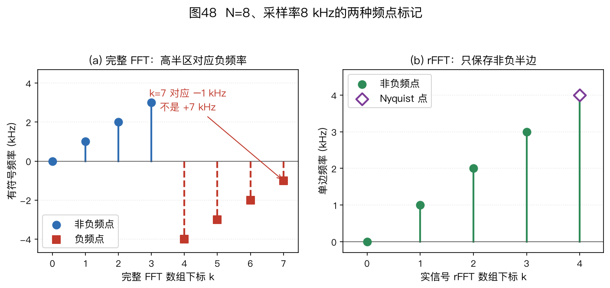
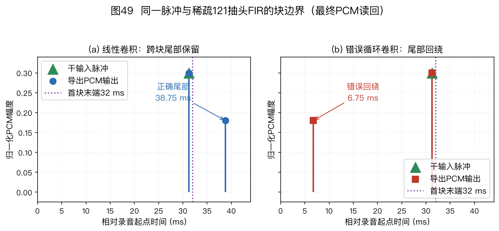
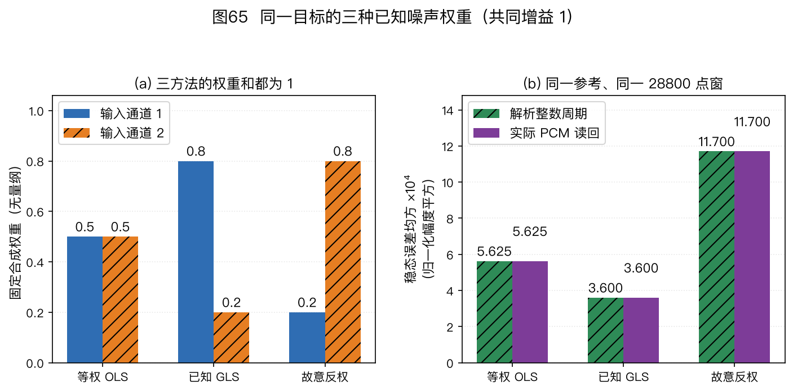

本页目录
⚠️ 本篇是第 14 章，即附录 A（正文与扩展专题共 15 章，其中第 12、13、16、17 章为扩展专题，另有附录 A、B），可独立查阅，前后篇见下方导航。
🏠 首页导读：🏠 导读与导航 ｜ 上一篇：第 17 章 · 条件目标提取与多通道日志 ｜ 下一篇：第 15 章 · 附录 B：路径地图与练习
第 14 章 · 附录 A：符号、术语与数学基础
本附录的 §14.1～§14.3 汇总全书通用的数学符号、声学与阵列处理核心术语以及高频使用的线性代数与复分析工具，§14.4 则通过小矩阵、短序列和边界反例手算巩固这些工具的适用条件；下一篇为附录 B。阅读正文时若遇到陌生的记号或变换，可以先查 §14.1～§14.3 建立直观图景，再回到所在章节核对具体的信号模型假设。
14.1 符号表
本书的排版约定与 §2.3 保持一致：斜体表示标量，头顶箭头表示列向量，加粗大写表示矩阵；上标 $^H$ 表示共轭转置（厄米转置），上标 $^\top$ 表示普通转置，顶帽 $\hat{\ }$ 表示估计量。按照语音信号处理文献的惯例，$X(f)$、$X(f_k,\ell)$ 这类带频点自变量的大写斜体字母表示单个频点或单个时频格点上的复数标量。
本书统一采用前向傅里叶核 $e^{-\mathrm{j}2\pi ft}$，其中 $\mathrm{j}=\sqrt{-1}$ 为虚数单位。
阵列几何参考系约定为：麦 1 位于原点 $x=0$，麦 2 位于 $+x$ 半轴；正横方向（$+y$ 轴）记为 $0^\circ$，正方位角朝麦 2（$+x$ 轴）顺时针旋转度量；方向单位向量 $\vec{u}$ 从阵列参考点指向声源，声波传播方向为 $-\vec{u}$。
球谐域公式通常改用从 $+x$ 轴逆时针起算的方位角 $\alpha$ 和从 $+z$ 轴向下起算的极角（余纬角）$\vartheta$。将其与本书从 $+y$ 朝 $+x$ 起算的声源方位角 $\theta$、从水平面朝 $+z$ 起算的俯仰角 $\phi_{\mathrm{el}}$ 对接时，必须先做角度换算 $\alpha=\pi/2-\theta$（按 $2\pi$ 周期折叠取值）、$\vartheta=\pi/2-\phi_{\mathrm{el}}$，再代入球谐基函数或开源库接口，详见§5.8。同理，国际标准 AmbiX 与一阶全景声（FOA）采用 $+x$ 朝正前方、$+y$ 朝正左方、$+z$ 朝正上方的三维右手系，其水平方位角从 $+x$ 逆时针转向 $+y$、俯仰角从水平面转向 $+z$，与上段平面阵列坐标系（$+y$ 正前、顺时针方位角）之间的对照详见专题Ⅲ §16.2。
字母复用（与 §2.3 一致）：由于阵列、自适应滤波、去混响与多目标追踪分属不同研究传统，同一个字母在不同章节可能承担不同角色。例如本表将波数记为 $\kappa=2\pi f/c$，以区别于离散频点索引 $k$，但部分文献与局部推导仍用 $k$ 记波数，第 7 章局部还用 $k$ 记 WPE 的滞后帧号；$D$ 可表示阵列孔径或 PHD 强度函数；$\lambda$ 可表示声波波长、RLS 指数遗忘因子、WPE 时变方差或矩阵特征值；$K$ 可表示声源个数或 WPE 预测阶数；$s$ 可表示源信号或追踪状态。具体含义以所在公式的定义为准。
本表区分 STFT 网格时，默认 $k$ 是频点索引、$\ell$ 是帧索引，$n$ 是离散采样索引，$t$ 是连续时间。各章沿用各自领域的经典记号时会另行声明下标：例如第 5 章的 $\vec{x}(k,n)$ 按（频点，帧）排列；第 8 章的 $X_m(f,k)$ 或 $\vec{x}_{ft}$ 也按（频点，帧）排列，其中用 $t$ 表示离散帧号。跨章对照公式时，应当先对齐每个维度的物理意义，不能仅凭字母相同就默认代表同一条坐标轴。
实信号的单边谱取 $0\leq k\leq\lfloor N/2\rfloor$，对应非负物理频率 $f_k=kf_s/N$（单位：Hz）。若在内存中保存完整的 $N$ 点 DFT，后半段索引对应负频率：偶数 $N$ 下的 $k>N/2$ 或奇数 $N$ 下的 $k>(N-1)/2$ 应换算为 $(k-N)f_s/N$。偶数 $N$ 的奈奎斯特（Nyquist）格点 $k=N/2$ 对实信号满足自共轭，在单边谱中常记作 $+f_s/2$；切勿把完整 DFT 的末尾格点误读成接近 $+f_s$ 的新高频分量。练习 E14-06 给出了八点序列的逐格复算。
若需要为完整双边频谱的每一个离散格点赋予唯一的有符号代表频率，本书采用与 NumPy 的 fftfreq 函数一致的排列规则：
$$f_k^{\mathrm{full}}= \begin{cases} kf_s/N,&0\leq k\lt \lceil N/2\rceil,\\ (k-N)f_s/N,&\lceil N/2\rceil\leq k\lt N. \end{cases}\tag{14-1}$$
偶数 $N$ 的奈奎斯特格点在式(14-1)双边约定下记为 $-f_s/2$，而在实信号单边谱约定下记为 $+f_s/2$；由于 $e^{-\mathrm{j}\pi n}=e^{+\mathrm{j}\pi n}=(-1)^n$ 在所有整数采样时刻 $n$ 取值完全相同，这两个记号指代同一个离散频点，并非两次独立观测。NumPy 完整频率排列文档与实谱单边频率排列文档分别规定了这两种下标映射（NumPy 2.5 在线文档，2026-09-28 核实）。
| 符号 | 含义 |
|---|---|
| $M$, $d$, $D$ | 麦克风数量、相邻阵元间距、阵列总孔径 |
| $f_s$, $N$, $H$ | 采样率（Hz）、DFT/STFT 窗长（点数）与帧移（hop size，相邻两帧起点的采样点数间隔，§2.5） |
| $N_{\mathrm{tar}}$（第 8 章 OverIVA） | 单独提取的目标声源数量；满足 $N_{\mathrm{tar}}\lt M$，不同于第 8 章式(8-1)统计全部物理声源数的 $N$，其余背景通道可包含多种混合干扰 |
| $c$, $\lambda$, $f$，$f_k$ | 声速（算例常取 $343\ \mathrm{m/s}$）、波长、连续物理频率（Hz）、单边 DFT/STFT 第 $k$ 个频点的非负物理频率 $f_k=kf_s/N$；完整双边 DFT 的负频率索引按式(14-1)换算 |
| $\kappa=2\pi f/c$ | 波数，单位为 $\mathrm{rad/m}$，使空间传播相位 $\kappa d$ 无量纲，并避免与频点索引 $k$ 混淆。矩阵二范数条件数 $\kappa_2(\mathbf{A})$ 与球面分布集中度 $\kappa_{\mathrm{vMF}}$ 为各自语境下的独立记号 |
| $\theta$, $\theta_0$ | 从正横方向起算的声源方位角、波束指向角；端射方向为 $\pm90^\circ$ |
| $\vec{u}(\theta)$ | 从阵列参考点指向声源的单位向量；声波传播方向为 $-\vec{u}$ |
| $\phi_{\mathrm{el}}$, $\vec{u}(\theta,\phi_{\mathrm{el}})$（第 3、9 章三维方向） | 俯仰角从水平面朝 $+z$ 为正，取值范围 $[-90^\circ,90^\circ]$；方位角仍从 $+y$ 朝 $+x$ 为正。天顶与天底极点处方位角无唯一定义，球面积分的面积微元因子按弧度写为 $\cos\phi_{\mathrm{el}}$（E09-26） |
| $\mathbf{R}_{\mathrm{WA}}$（第 9 章姿态） | 将阵列局部坐标系下的指源单位向量变换到世界坐标系的已知三维正交旋转矩阵，满足 $\det(\mathbf{R}_{\mathrm{WA}})=+1$ 且逆矩阵等于其转置 $\mathbf{R}_{\mathrm{WA}}^\top$；注意与空间协方差矩阵区分。右手系绕 $+z$ 轴的正旋转与本书方位角的正方向相反（E09-26） |
| $\vec{r}_m$, $\vec{p}$ | 第 $m$ 个麦克风的三维位置向量、近场声源位置向量 |
| $t$, $n$, $k$, $\ell$, $L$ | 连续时间、离散采样索引、频点索引、帧索引、统计平均所用的快拍数；第 2 章式(2-6)、式(2-7)及本附录式(14-3)均用 $L$ 记快拍数 |
| $v_m[n]$, $\vec{v}(f_k,\ell)$ | 第 $m$ 个麦克风的时域加性传感器噪声与频域多通道噪声列向量（§2.3 主记号）；部分章节在无下标歧义时亦记为 $n_m[n]$ 或 $\vec{n}$ |
| $\psi$ | 相邻两麦经过波束指向相位补偿后的残余空间相位差（§2.6、§5.2）；E09-26 局部用 $\psi$ 记右手绕 $+z$ 轴的姿态偏航角，专题Ⅲ §16.4 式(16-12) 另用 $\psi\in[0,1]$ 表示声场扩散度（diffuseness） |
| $\vec{a}(\theta)$, $\vec{w}$ | 阵列导向矢量、窄带复数波束权重向量 |
| $\hat{\mathbf{R}}$, $\mathbf{R}_{nn}$, $\mathbf{R}_{ss}$ | 样本空间协方差矩阵、噪声空间协方差矩阵、目标语音空间协方差矩阵 |
| $\mathbf{\Gamma}$ | 三维球面各向同性弥散噪声场的空间相干矩阵；二维水平面各向同性入射模型另见 §5.1 |
| $\mathbf{E}_n$, $\mathbf{E}_s$, $\boldsymbol{\Psi}$（第 4 章子空间） | 噪声子空间特征向量基、信号子空间特征向量基，以及 ESPRIT 算法连接平移不变双子阵信号子空间的旋转不变算子 $\boldsymbol{\Psi}$（§4.6） |
| $\sigma^2$ | 噪声方差（平均功率）；各通道独立同功率空间白噪声的协方差矩阵为 $\sigma^2\mathbf{I}$ |
| $\mathbf{C}$, $\vec{f}$ | LCMV 波束形成器的线性约束矩阵与期望响应向量，满足 $\mathbf{C}^H\vec{w}=\vec{f}$（§5.5） |
| $\vec{e}_r$ | 参考麦克风选择向量（第 $r$ 个分量为 $1$、其余为 $0$ 的标准基向量，用于 MWF 与 SDW-MWF 指定参考通道，见第 5 章 MWF 专题） |
| $U, u$（专题Ⅱ） | 分布式声学传感器网络的节点总数与节点索引；节点 $u$ 配备 $M_u$ 个本地麦克风，全网总麦数 $M=\sum_{u=1}^U M_u$ |
| $S, Q$（专题Ⅱ） | 潜在共同目标信号维数与每个节点向邻居广播的压缩信号维数；经典 DANSE 收敛定理常要求 $Q=S$。注意与房间声学的声源指向因子 $Q$ 区分 |
| $\mathbf{T}_u, \vec{h}_u, \vec{f}_u, \vec{g}_u$（专题Ⅱ） | $\mathbf{T}_u^H$ 将全网观测映射为节点 $u$ 可获取的本地加邻居压缩观测；$\vec{h}_u=[\vec{f}_u^\top,\vec{g}_u^\top]^\top$ 为节点 $u$ 的接收组合权重，其中 $\vec{f}_u$ 作用于本地麦克风信号、$\vec{g}_u$ 作用于接收到的邻居广播信号 |
| $\mathbf{B}$ | 广义旁瓣相消器（GSC）的阻塞矩阵，满足正交阻塞条件 $\mathbf{B}^H\vec{a}(\theta_0)=\vec{0}$（§5.6） |
| $\Phi(f)$ | 在 §4.2 中表示广义互相关（GCC）的频域加权函数；在 §5.7 中表示信号或噪声功率谱密度，阅读时按所在章节公式区分 |
| $\mathbf{P}$, $\mathbf{K}$, $\mathbf{Q}$, $\mathbf{F}$, $\mathbf{H}$ | 卡尔曼滤波核心矩阵：状态估计误差协方差、卡尔曼增益、过程噪声协方差、状态转移矩阵、观测矩阵（§9.2） |
| $\vec{\nu}_t$, $\mathbf{S}_t$, $N_{\mathrm{eff}}$（第 9 章追踪） | 卡尔曼滤波第 $t$ 帧的新息向量（观测减预测）与新息协方差矩阵，以及粒子滤波衡量权重退化程度的有效粒子数 $N_{\mathrm{eff}}=1/\sum_i (w_t^{(i)})^2$（§9.2） |
| $\mu_j$, $c_j$, $L_j$（第 9 章 IMM） | 交互式多模型（IMM）的模式后验概率、经马尔可夫转移混合后的模式先验概率、模式条件观测似然密度。以角度（deg）为单位的标量观测似然密度 $L_j$ 量纲为 $\mathrm{deg}^{-1}$，并非无量纲概率；漏检帧不产生新的 $L_j$（E09-24） |
| $\kappa_{\mathrm{vMF}}$, $\vec{\mu}_{\mathrm{vMF}}$, $A(\kappa)$（第 9 章球面概率） | von Mises–Fisher（vMF）方向分布的无量纲集中度、单位均值方向向量与期望向量模长函数（E09-26 局部简记为 $k$ 与 $\vec{m}$）；完全均匀分布时集中方向无定义。注意与 IMM 模式概率 $\mu_j$ 及 PHD 杂波强度 $\kappa_t(z)$ 区分 |
| $V$, $A$, $S$, $\bar{\alpha}$ | 房间体积、等效吸声面积、内表面总面积、平均吸声系数（§2.4） |
| $\mu_{\mathrm{NLMS}}$ | 归一化最小均方（Normalized Least Mean Squares，NLMS）步长（§6.1）；第 6 章导出理想无噪单步误差收缩条件 $0\lt \mu\lt 2$，工程取值还受分母正则项、近端噪声和时变路径制约 |
| $\mu_{\mathrm{SDW}}$ | 语音失真加权多通道维纳滤波（Speech-Distortion-Weighted Multichannel Wiener Filter，SDW-MWF）的失真—降噪折中系数（第 5 章 MWF 专题）；与 NLMS 步长不是同一物理量 |
| $\varepsilon_{\mathrm{NLMS}}$ | NLMS 更新分母中的正定保护常数，与输入信号能量同量纲，防止静音帧除零并抑制极低能量段的权重跳变（§6.1） |
| $\varepsilon$, $\alpha$, $\delta$, $\eta$（对角加载与稳健界） | 第 5 章将绝对对角加载写为 $\mathbf{R}+\varepsilon\mathbf{I}$（文献与本附录局部亦记 $\delta$），参数与 $\mathbf{R}$ 同量纲；相对对角加载写为 $\mathbf{R}+\alpha\,\operatorname{tr}(\mathbf{R})\mathbf{I}/M$（文献与 E14-13 亦记 $\eta$），参数无量纲；范数有界导向误差球半径记为 $\|\vec{\Delta}\|_2\leq\delta$（§5.4） |
| $\tau_{ij}$，TDOA | $\tau_{ij}=t_i-t_j$，到达时间差（Time Difference of Arrival，TDOA）；远场平面波下相对麦 1 的时差为 $\tau_{m1}=-(\vec{r}_m-\vec{r}_1)^\top\vec{u}/c$ |
| $T_{60}$，DRR，$d_c$ | 混响时间、直达混响比（Direct-to-Reverberant Ratio，DRR；常取 dB 读数）、临界距离 |
| WNG，DI，HPBW，SLL | 白噪声增益（White Noise Gain，WNG）、指向性指数（Directivity Index，DI）、半功率波束宽度（Half-Power Beamwidth，HPBW）、旁瓣电平（Side-Lobe Level，SLL） |
| RTF | 在波束与空间建模中指相对传递函数（Relative Transfer Function）；在系统评测与选型中指实时因子（Real-Time Factor），即统计窗口内累计处理耗时除以新推进音频时长（帧间重叠样本不得重复计入分母，第 10 章遥测另用 frame_service_rtf 记录单帧比值） |
| $x[n], d[n], y[n], e[n]$，$h[n], \hat{\vec{w}}, \lambda$，ERLE | AEC 远端播放参考、麦克风拾音信号、线性估计回声与残差信号，真实回声路径、自适应滤波器抽头向量、RLS 指数遗忘因子（$0\lt \lambda\leq 1$），以及回声返回损失增强（Echo Return Loss Enhancement，ERLE；§6.1、§6.2） |
| $G(k,f)$, $\lambda_{ft}$, $\Delta$, $K$ | WPE 线性预测系数、目标早期语音的时变方差（功率谱）$\lambda_{ft}$、保护延迟帧数与预测阶数。第 7 章局部用 $k$ 记滞后帧号、$f$ 记无量纲离散频点索引（时变方差亦记作 $\lambda(f,t)$），阅读时与按 Hz 计的连续频率 $f$ 区分（§7.1） |
| $\mathbf{W}_f$, $\pi$（第 8 章分离） | 第 $f$ 个频点的盲源分离解混矩阵（$\hat{\vec{s}}_{ft}=\mathbf{W}_f\vec{x}_{ft}$）与对齐输出声道归属的源排列映射 $\pi$（§8.1、§8.3） |
| $\mathbf{A}$, $\mathbf{P}$, $\vec{q}$, $\vec{b}$（专题Ⅰ） | 声学成像传播字典、点扩散函数（PSF）矩阵、参考面处的候选源均方强度向量、波束扫描脏图向量；满足 $P_{ij}=|\vec{w}_i^H\vec{a}_j|^2$（行对应扫描格点、列对应真实源格点），注意与第 9 章卡尔曼误差协方差 $\mathbf{P}$ 区分（§12.4） |
| CSM、$\mathbf{R}$、$p_{\mathrm{ref}}$（专题Ⅰ） | 互谱矩阵（Cross-Spectral Matrix）与空气声学参考有效声压 $p_{\mathrm{ref}}=20\ \mu\mathrm{Pa}$；未归一化 FFT 外积、每 Hz 功率谱密度与单频均方幅度的量纲标度不同，数字幅值未经声压灵敏度校准前不得直接标为 $\mathrm{Pa}^2$ 或 dB SPL（§12.3） |
| $W, X, Y, Z$，$\vec{b}_{\mathrm{WXYZ}}$，$\vec{b}_{\mathrm{ACN}}$（专题Ⅲ） | 一阶全景声（FOA）在 SN3D 归一化下的零阶全向与三个一阶偶极通道，以及直观序 $[W,X,Y,Z]^\top$ 与标准 ACN 序 $[W,Y,Z,X]^\top$（§16.2） |
| $b_l(\kappa R)$（专题Ⅲ） | 半径 $R$ 球面阵列的第 $l$ 阶径向模态权重；开球全向阵在 $\kappa R=\pi$ 处出现 $b_0^{\mathrm{open}}(\pi)=0$ 零陷（§16.2） |
| $\vec{I}_a, \vec{I}_r$，$E, \psi$（专题Ⅲ） | 时间平均有功声强、无功声强、总声能密度与声场扩散度 $\psi=1-\|\bar{\vec{I}}_a\|_2/(c\bar{E})$（其中 $\bar{\vec{I}}_a=\mathbb{E}[\vec{I}_a]$、$\bar{E}=\mathbb{E}[E]$，取值 $\psi\in[0,1]$，§16.4） |
| $\mathbf{H}, \vec{p}_e, \vec{\phi}$；$\mathrm{IC}, \beta$（专题Ⅲ） | 可穿戴阵列 $Q$ 方向流形矩阵、目标耳 HRTF 向量与 MagLS 辅助自由相位向量（由 $\mathbf{H}^H\vec{w}_e$ 拟合共轭目标 $\vec{p}_e^*$，§16.5～§16.6）；双耳相干度与参考麦混合系数 $\beta\in[0,1]$（§16.7） |
| $U_c, \gamma_{\mathrm{wind}}(f)$；$H_{\mathrm{occ}}(f)$；$\tau_{\mathrm{proc}}$（专题Ⅲ） | Corcos 湍流风噪对流速度与空间相干度（§16.8）；耳道闭塞内麦/骨导相对外麦的跨模态自语音传递函数（§16.9）；主动通透模式端到端处理延迟（§16.10） |
| $\mathcal{C}, \vec{e}, \vec{\gamma}, \vec{\beta}$；$\mathcal{L}_{\mathrm{dual}}$，$\tau_{\mathrm{floor}}$（专题Ⅳ） | 目标先验线索、条件嵌入向量与 FiLM 通道缩放/偏置向量；兼顾发声段负 SI-SDR 与沉默段相对混合能量地板系数的双态损失（§17.2） |
| $r_F=2D^2/\lambda$，$\vec{w}_{\mathrm{bubble}}$（专题Ⅳ） | 菲涅耳近场曲率边界与三麦正侧向声学距离气泡二阶空间差分权重（§17.3） |
| $\mathrm{DER}$，$E_{\mathrm{miss}}$，$E_{\mathrm{FA}}$，$E_{\mathrm{conf}}$（专题Ⅳ） | 说话人日志误差率及逐帧漏检、虚警、说话人混淆人数误差；虚警较高时合法 $\mathrm{DER}$ 可大于 $100\%$（§17.4） |
| $\gamma_{k,t}$，$m_{k,t}^{\mathrm{tar}}$，$m_{k,t}^{\mathrm{int}}$；$\Delta t_{\mathrm{av}}, \alpha_\ell$（专题Ⅳ） | TS-VAD 独立伯努利活动后验与 GSS 目标排他掩码/干扰掩码（§17.5）；视听管线正滞后与逐帧视觉可见度置信度门控权重（§17.6） |
| PHD / RFS | 概率假设密度（Probability Hypothesis Density，PHD）与随机有限集（Random Finite Set，RFS） |
表中残余相位 $\psi$ 的“残余”二字是相对于波束指向角 $\theta_0$ 而言的：当平面波从方位 $\theta$ 入射时，等间距线阵先按目标方向 $\theta_0$ 施加补偿时延，补偿后相邻两麦之间剩余的相位差即为
$$\psi=\frac{2\pi d}{\lambda}(\sin\theta-\sin\theta_0)\text{。}$$
式中 $d/\lambda$ 与正弦差均为无量纲比值，因此 $\psi$ 的单位是弧度（rad）。当入射方向恰与指向重合（$\theta=\theta_0$）时，$\psi=0$，各通道信号同相叠加形成主瓣峰值；当 $\theta$ 偏离 $\theta_0$ 时，$\psi$ 随角度的变化规律直接决定了主瓣宽度、零陷位置与旁瓣高度（§5.2）。
在三维球面各向同性弥散噪声场模型下，第 $i,j$ 个麦克风在频率 $f$ 处的空间相干系数为
$$[\mathbf{\Gamma}]_{ij}=\operatorname{sinc}\!\left(\frac{2fd_{ij}}{c}\right),\qquad \operatorname{sinc}(x)=\frac{\sin(\pi x)}{\pi x}\text{。}$$
其中 $d_{ij}=\|\vec{r}_i-\vec{r}_j\|_2$ 为两麦间距，$f$ 为物理频率（Hz），$c$ 为声速；当 $i=j$ 或 $f=0$ 时，按连续极限取 $[\mathbf{\Gamma}]_{ij}=1$。这一 $\operatorname{sinc}$ 公式依赖噪声能量从三维球面均匀入射的几何假设；若噪声仅在二维水平面内各向同性入射，相干系数则变为零阶第一类贝塞尔函数 $J_0(2\pi fd_{ij}/c)$，两类声场模型不能混用（§5.1）。
手算（14.1）：设 $M=6$ 元阵列在目标方向已完成无失真归一化（$\vec{w}^H\vec{a}=1$），各通道传感器自噪声相互独立且功率相等，求等权延迟求和波束形成（DSB）的白噪声增益（WNG，以 dB 表示）；再写出二阶对角空间协方差矩阵 $\operatorname{diag}(4, 1)$ 的两个特征值，并说明其特征向量的物理含义。
输入与代入：在理想等幅目标导向 $|\vec{a}|=[1,\ldots,1]^\top$ 下，满足 $\vec{w}^H\vec{a}=1$ 的等权 DSB 权重为 $\vec{w}=\vec{a}/M$，权重范数平方为 $\|\vec{w}\|_2^2=M\times(1/M)^2=1/M$，故线性白噪声增益为 $\mathrm{WNG}=1/\|\vec{w}\|_2^2=6$，换算为分贝得 $10\log_{10}6\approx7.78\ \mathrm{dB}$（约 $7.8\ \mathrm{dB}$）。对于对角矩阵 $\operatorname{diag}(4, 1)$，非对角元全为零，特征方程 $(4-\lambda)(1-\lambda)=0$ 直接给出两个特征值 $4$ 和 $1$，对应标准正交特征向量 $[1,0]^\top$ 与 $[0,1]^\top$。需要注意，协方差矩阵的特征向量张成的是传感器观测空间中的正交主轴，一般并不直接对应物理空间中的两个声源入射方向。
14.2 术语词典
下表按知识模块梳理正文中反复出现的核心术语、物理含义与使用边界。
信号与数学基础
| 术语 | 解释 |
|---|---|
| STFT（短时傅里叶变换） | 将连续长波形按固定帧移切分为重叠短帧，加窗后逐帧计算 DFT，得到时间—频率二维复数谱。窗长与帧移需在频率分辨率、语音短时平稳性与系统延迟之间折中；在满足窄带近似条件时，可把时域宽带卷积拆解为逐频点复数乘加（§2.5） |
| 快拍（snapshot） | 某一帧、某一频点上，$M$ 个麦克风的复数频谱分量按通道顺序排成的 $M$ 维列向量，相当于阵列在该时频格点拍下的一帧空间采样（§2.5） |
| 空间协方差矩阵 $\hat{\mathbf{R}}$ | 阵列信号处理中常把快拍外积的时间平均 $\frac{1}{L}\sum_\ell \vec{x}_\ell\vec{x}_\ell^H$ 简称为样本空间协方差矩阵。若未先减去样本均值，它严格来说是未中心化样本二阶矩，仅当当前这批快拍的样本均值恰好为零向量时才与同分母的中心化样本协方差相等；总体零均值并不能保证有限样本均值为零。它是 Capon、MVDR 与 MUSIC 的核心输入，定义见第 2 章式(2-6)、式(2-7) |
| 特征分解 / 子空间 | 将厄米矩阵分解为实特征值与正交特征向量。要把前 $K$ 个大特征值对应的特征向量解释为 $K$ 维信号子空间，需同时满足源协方差满秩、导向矩阵满列秩、源数 $K\lt M$、空间白噪声、源与噪声互二阶矩为零以及流形模型准确；其余对应噪声底的特征向量张成噪声子空间（图 6d、§4.6） |
| 超定方程组 | 独立方程条数多于未知数个数的线性方程组。当右端观测向量恰好落在系数矩阵列空间内时存在精确解，不相容时则通过最小二乘寻找残差范数最小的近似解。在 TDOA 定位中，多组麦克风对的时差往往共享同一个参考到达时刻，方程条数增加并不代表独立几何约束等量增加（§4.4） |
| 双曲线定位 | 在二维平面中，一对麦克风测得的非退化到达距离差对应以这两只麦克风为焦点的双曲线的一支；在三维空间中则对应双叶双曲面的一叶。联立多组独立基线求交即可定位近场声源，但在共线或端射退化几何下可能不存在唯一交点（§4.4） |
| 常规波束分辨率 / 超分辨 | 常规延迟求和波束的主瓣角宽量级受限于瑞利限 $\lambda/D$；子空间类方法（如 MUSIC、ESPRIT）在流形准确、信噪比与快拍数充足且声源非完全相干时，能够分辨角间距小于 $\lambda/D$ 的多个声源，故称超分辨（§2.6、§4.6） |
| 波束图（beampattern） | 波束形成器固定权重后对空间各入射方向平面波的复响应模值（或功率增益）随角度变化的曲线，用于直观读取主瓣宽度、旁瓣高度与干扰零陷位置（图 7a） |
| 自由度（DOF） | 优化问题中可独立调节的参数维数。窄带 $M$ 麦波束权重拥有 $M$ 个复自由度；每施加一条线性独立的复数等式约束消耗 $1$ 个复自由度，冗余约束不额外消耗自由度，相互矛盾的约束则导致可行集为空（§5.5）。稀疏阵借助差分协同阵可在二阶统计域扩展虚拟阵元数，但虚拟滞后不能等同于真实的物理麦克风通道（§3.3） |
| 抽头（tap） | 有限长冲激响应（FIR）滤波器的单个乘加系数。“128 抽头滤波器”代表共有 128 个脉冲响应系数，对应 $z^{-1}$ 多项式的最高阶数为 127 阶，查阅文献与代码接口时应留意“长度”与“阶数”相差 1 的惯例（§6.1） |
| 优先效应（precedence effect） | 当直达声与短延迟早期反射声从不同方向先后到达双耳且声学特征相近时，人类听觉系统对声源方位的感知主要由先到达的直达声主导；这并不意味着反射声的能量或音色影响被完全忽略。第 1 章 §1.1给出了现象定义与 Wallach 等（1949）的实验出处，§2.4 讨论了房间脉冲响应建模 |
| 拉格朗日乘子法 | 求解等式约束极值问题的经典解析方法：通过引入拉格朗日乘子将线性约束并入目标函数，构造实值拉格朗日函数并对复权重共轭求驻点，即可导出 MVDR 与 LCMV 的闭式解（§5.4、§14.3.6） |
| GCC-PHAT 频谱相位加权 | 在每个非零互谱频点将互功率谱 $G_{12}(f)$ 除以其模值 $|G_{12}(f)|$，使各频点幅值归一为 $1$、仅保留相位差信息，零模值频点需加正则分母或跳过。该操作均衡的是单对通道的频域幅度谱形状，并不能将多通道间的空间相关噪声白化（§4.2；参见Knapp 与 Carter（1976）广义互相关论文） |
| 空间噪声白化（spatial noise whitening） | 在固定频点已知厄米正定噪声协方差 $\mathbf{R}_{nn}$ 时，左乘白化矩阵 $\mathbf{W}$ 使变换后噪声协方差满足 $\mathbf{W}\mathbf{R}_{nn}\mathbf{W}^H=\mathbf{I}$；与此同时，目标导向矢量也必须同步变换为 $\mathbf{W}\vec{a}$。它消除的是通道间的噪声相关性与功率差异，切勿与 GCC-PHAT 的逐频点标量归一化混为一谈（E14-04） |
| sinc 函数 | 本书统一采用归一化定义 $\operatorname{sinc}(x)=\sin(\pi x)/(\pi x)$。三维球面各向同性弥散场的两麦空间相干系数服从该形式；二维水平面各向同性场则对应零阶贝塞尔函数 $J_0(2\pi fd/c)$（§5.1）。部分数学文献将未归一化的 $\sin x/x$ 记作 $\operatorname{sinc}(x)$，代入公式前需先核对因子 $\pi$ |
| SNR（信噪比） | 目标信号功率与噪声功率的比值，常取 $10\log_{10}$ 换算为 dB；阵列处理后的输出 SNR 减去参考通道输入 SNR 即为阵列 SNR 增益。在回声消除（AEC）中常另用信回比（SER）衡量近端语音与远端回声的功率比，汇报时须写明参考取点与统计时段（§5.1、§6.1） |
| dB（分贝） | 物理量相对参考值比值的对数标度：功率或能量之比乘 $10\log_{10}$，声压或电压等幅度之比乘 $20\log_{10}$。两种算式仅在分子与分母满足相同的“功率正比于幅度平方”阻抗比例关系时才给出完全一致的分贝值（§14.3.2） |
| FFT（快速傅里叶变换） | 离散傅里叶变换（DFT）的分治快速算法，将长度为 $N$ 的时域帧映射为 $N$ 个离散频点的复数谱，计算复杂度由 $O(N^2)$ 降至 $O(N\log N)$；STFT 即对滑动加窗帧连续执行 FFT（§2.5） |
| DNN（深度神经网络） | 由多层线性变换与非线性激活函数复合而成的参数化模型，通过大规模带标注或自监督音频数据训练权重。在阵列前端中常用于预测时频掩码、声源方向后验分布或直接映射增强频谱（§4.7、§5.9） |
| 远场 / 近场 | 远场假设声源距离远大于阵列孔径，波前近似为平面波，导向矢量仅取决于入射角度；近场则必须采用球面波模型，同时计入阵元到声源的精确距离差与球面扩散幅度衰减。夫琅禾费距离 $2D^2/\lambda$ 常作为检验波前二次相位弯曲的参考尺度，实际工程中还需结合 $r\gg D$、容许相位误差上限与通道间幅度差综合判定（§2.2） |
房间声学
| 术语 | 解释 |
|---|---|
| RIR（房间脉冲响应） | 在声源位置、麦克风位置固定且声学传播满足线性时不变假设时，从声源发出单位冲激到麦克风接收到的完整时域响应序列（含直达声、早期反射与晚期混响）；干声源与 RIR 做线性卷积即可合成麦克风接收信号（§2.4） |
| $T_{60}$ | 混响时间，定义为稳态声源停止发声后室内声能密度衰减 $60\ \mathrm{dB}$ 所需的时间（秒），其数值随房间体积、墙面吸声材料与测量频带而变化 |
| 直达混响比（Direct-to-Reverberant Ratio，DRR） | RIR 中直达声部分能量与全部反射混响部分能量之比，dB 读数大于 $0\ \mathrm{dB}$ 表示直达声占优，小于 $0\ \mathrm{dB}$ 表示混响能量超过直达声 |
| 临界距离 $d_c$ | 在给定声源指向性与稳态扩散混响场假设下，直达声能量与混响声能量恰好相等（即 $\mathrm{DRR}=0\ \mathrm{dB}$）的收发距离；赛宾（Sabine）近似下常写为 $d_c\approx0.057\sqrt{QV/T_{60}}$，其中 $Q$ 为声源指向因子，仅当全向声源 $Q=1$ 时才退化为 $0.057\sqrt{V/T_{60}}$（§2.4） |
| 镜像法（Image-Source Method） | 将刚性或部分吸声墙面的镜面反射等效为墙体背面虚拟镜像声源辐射叠加的几何声学仿真方法（Allen & Berkley，1979），也是 pyroomacoustics 规则房间仿真的基础内核 |
| 弥散噪声场（diffuse noise field） | 声能从空间各方向均匀随机入射、不存在单一主传播方向的理想统计声场模型。房间晚期混响尾音常近似为球面弥散场，但麦克风防风罩表面的局部湍流风噪空间相关性极短，不服从声学弥散场相干规律 |
自适应滤波、增强与分离
| 术语 | 解释 |
|---|---|
| LMS / NLMS / RLS | 最小均方（Least Mean Squares，LMS）结构最简；归一化最小均方（Normalized LMS，NLMS）用当前输入帧能量对步长做动态归一化；递归最小二乘（Recursive Least Squares，RLS）利用输入相关矩阵的递推求逆对有色激励做去相关更新，通常收敛更快，但单步复杂度与存储开销也更高。三者的实际权衡取决于激励谱平坦度、滤波器阶数与正则参数（GSC §5.6、NLMS §6.1.2、RLS §6.2.5） |
| 音乐噪声（musical noise） | 传统谱减或过激实数掩码在噪声功率估计波动时留下的随机孤立窄带谱峰，逆变换回时域后听感类似零星闪烁的水滴或金属泛音（§5.7） |
| ICA / IVA | 独立成分分析（ICA）利用源信号的非高斯统计独立性逐频点估计解混矩阵 $\mathbf{W}_f$；独立向量分析（IVA）将同一声源在全部频点的复分量捆绑为球面联合分布向量统一优化，从源模型层面抑制频点间的排列错位（§8.3） |
| NMF（非负矩阵分解） | 将非负幅度谱或功率谱矩阵近似分解为低秩谱字典基矩阵与时间激活矩阵的乘积；单通道 NMF 本身不包含空间相位信息，不直接给出多通道解混滤波器，见§8.3 |
| AuxIVA | 基于辅助函数（Majorization-Minimization）无步长迭代求解的独立向量分析算法；输出各分离通道的复数谱后，仍需利用投影回推（projection back）恢复参考麦物理尺度，见§8.3 |
| ILRMA | 独立低秩矩阵分析；将正定线性解混模型（AuxIVA）与各声源的 NMF 低秩功率谱模型统一在同一负对数似然代价下交替更新，见§8.3 |
| MNMF | 多通道非负矩阵分解；为每个声源同时拟合 NMF 时频功率谱与满秩空间协方差矩阵，再通过多通道维纳滤波重构各源声像。需要注意，模型能写出欠定混合表达式并不代表所有源在有限数据下都具备参数可辨识性，见§8.3 |
| FastMNMF | 假设各声源的空间协方差矩阵在每个频点可由同一个非奇异变换矩阵联合对角化，从而把矩阵求逆简化为标量运算以大幅加速 MNMF；优化该对角化矩阵时不可漏掉似然函数中的对数行列式雅可比（Jacobian）项，见§8.3及 E08-25～E08-26 |
| cACGMM | 复角中心高斯混合模型；对单位范数归一化后的多通道复方向向量建立混合分布，利用 EM 算法输出各声源的时频归属后验概率（掩码），方向归一化步骤本身会隐去原始声压绝对功率尺度，见§8.4.2 |
| CSS（连续语音分离） | 将长流式音频切分为带重叠的滑动时间窗，逐窗独立分离后对齐相邻窗的输出通道排列 $\pi$ 并拼接输出；工程实现需同时协调重叠区的说话人身份对齐、幅度尺度与相位连续性，见§8.6 |
| TSE（目标说话人提取） | 目标说话人提取（Target Speaker Extraction，亦称目标语音提取 Target Speech Extraction，TSE）：以注册声纹嵌入、空间方向/近场距离区间或视觉唇动线索作为辅助条件，仅提取指定说话人语音；双态静音损失、单人擦音旁路与未见说话人泛化边界见§8.6及专题Ⅳ §17.1～§17.2 |
| PIT（排列不变训练） | 监督分离网络的训练准则：在计算单句损失时遍历输出通道的全部排列 $\pi$，选取与真值参考源误差最小的一组排列回传梯度；单窗 PIT 本身不自动维持跨窗长录音的说话人通道固定（§8.1） |
| DANSE | 分布式自适应节点特定信号估计；网络中各节点仅向邻居广播线性压缩后的低维本地信号并迭代更新接收组合权重 $\vec{h}_u$。算法的参数迭代异步与硬件晶振的采样时钟异步属于两类不同机制，需分别处理，见专题Ⅱ |
| GEVD | 广义特征值分解；在噪声协方差度量下联合对角化混合协方差与噪声协方差。GEVD-MWF 利用主广义特征向量做低秩目标协方差重构以提升维纳滤波稳健性，其优化准则不同于直接最大化输出信噪比的 GEV 波束，见专题Ⅱ §13.12 |
| 说话人日志（Speaker Diarization）与 DER | 工程文献亦称说话人分割聚类，回答“谁在什么时段说话”；说话人日志误差率（DER）累加漏检、虚警与混淆时长并除以参考总说话人时长，硬单标签聚类在重叠对话中存在理论误差下界，见专题Ⅳ §17.4 |
| TS-VAD / SOT / DiCoW | 目标说话人语音活动检测（TS-VAD）以声纹与空谱特征并行输出多说话人重叠活动后验；序列化输出训练（SOT）与基于日志条件化的 Whisper（DiCoW）则分别代表单流多说话人转写与条件化端到端目标转写架构，见专题Ⅳ §17.5、§17.7 |
波束形成与阵列度量
| 术语 | 解释 |
|---|---|
| 导向矢量 $\vec{a}(\theta)$ | 在给定频率与声源方向（或近场坐标）下，各麦克风通道相对参考点的复数传递响应列向量；理想远场全向同增益阵列中仅含传播相位差，近场球面波或带障板实测流形则同时包含通道间幅度差与相位差（§2.3） |
| 转向（steering） | 按候选方向的导向矢量补偿各麦克风通道的传播时延或相位差，使波束主瓣对准指定空间方向 |
| 主瓣 / 旁瓣 / 零陷 | 波束方向图中包含目标指向的中心高增益波瓣、主瓣以外的次级局部峰值，以及响应幅度趋近于零的空间抑制凹槽（图 7a） |
| 栅瓣（grating lobe） | 阵元间距过大违背空间奈奎斯特采样条件时产生的空间混叠旁瓣；均匀线阵在高频或大转向角下会出现与主瓣等高的栅瓣，造成真实方向与混叠方向无法由空间滤波区分（§2.6、图 7b） |
| 白噪声增益（White Noise Gain，WNG） | 波束形成器输出端信噪比相对单通道输入端信噪比在空间独立同功率白噪声假设下的比值；满足无失真约束 $\vec{w}^H\vec{a}=1$ 且等幅理想导向时，等权 DSB 取得最大白噪声增益 $10\log_{10}M\ \mathrm{dB}$（§2.6） |
| 指向性指数（Directivity Index，DI） | 波束形成器在目标方向的功率响应与各向同性弥散噪声场平均功率响应之比的分贝值，需注明采用三维球面还是二维水平面弥散场口径（§2.6） |
| 半功率波束宽度（HPBW）/ 旁瓣电平（SLL） | HPBW 为主瓣峰值两侧下降 $3\ \mathrm{dB}$（功率减半）交点之间的角度跨度；SLL 为最高旁瓣峰值相对主瓣峰值的分贝差。若扫描角域内主瓣一侧未跌破 $-3\ \mathrm{dB}$ 或不存在局部次峰，应如实标注该指标未闭合或无旁瓣（§2.6、§5.2） |
| CRLB / CRB（克拉美－罗下界） | 在指定观测概率分布与正则可微条件下，任何无偏参数估计器的协方差矩阵所能达到的理论下界；一旦改变噪声统计假设、未知干扰参数化方式或允许有偏估计，下界本身也会随之改变（§2.6） |
| MVDR（最小方差无失真响应） | 在目标方向线性无失真约束 $\vec{w}^H\vec{a}=1$ 下最小化输出噪声（或干扰加噪声）方差的自适应波束形成器；混响环境中常将自由场导向矢量替换为目标早期相对传递函数（§5.4） |
| MWF（多通道维纳滤波） | 以最小化波束输出与选定参考通道目标语音声像之间的均方误差为准则，允许在微量语音失真与大幅噪声抑制之间折中；SDW-MWF 引入失真加权参数调节该平衡，秩一化简与极限性质见下文独立小节及第 5 章 MWF 专题 |
| 相对传递函数（RTF） | 各麦克风通道的目标声学传递函数除以参考麦克风通道传递函数所得的复数比值；取决于估计窗口长度，RTF 可涵盖直达声与部分早期反射，比理想自由场平面波导向更贴合真实房间声像（§5.4） |
| 对角加载（diagonal loading） | 在样本协方差矩阵求逆前向主对角线加上正数项，以压低条件数、增强对导向失配与有限快拍误差的稳健性。第 5 章将绝对加载记为 $\mathbf{R}+\varepsilon\mathbf{I}$（文献与本附录算例亦记 $\delta$），相对加载记为 $\mathbf{R}+\alpha\,\operatorname{tr}(\mathbf{R})\mathbf{I}/M$（亦记 $\eta$）；前者与协方差同量纲，后者无量纲且随输入功率整体缩放保持条件数不变（§5.4、§14.3.8） |
| 相干源（coherent sources） | 在同一频点上，多个声源信号互为确定性复常数倍（如直达声与强镜面反射），导致源协方差矩阵发生秩亏损，直接破坏标准 MUSIC 对信号子空间维数的满秩前提；满足均匀线阵几何与阵元数条件时可通过空间平滑恢复秩（§4.6） |
| 空间平滑（spatial smoothing） | 第 4 章将均匀线阵划分为若干重叠子阵并对子阵二阶协方差求平均，以牺牲有效孔径换取相干源去相关（矩阵元素量纲为观测幅度平方）；第 3 章差分协同阵空间平滑则对虚拟滞后信号再构造外积矩阵（元素量纲为观测幅度四次方），两者的输入统计量与物理假设不可混用（§4.6、§3.3） |
| 差分协同阵（difference coarray） | 由物理阵元坐标两两作差生成的全部有符号空间滞后集合。在声源互不相关、准平稳且各通道增益一致的假设下，可利用二阶互相关向量重排构造更高维的虚拟均匀线阵协方差，但不能把正负对称滞后跨度误算为物理孔径翻倍（§3.3） |
| GEV 波束形成器 | 直接最大化输出端目标与噪声广义瑞利商（即输出信噪比）的波束形成器，求解广义特征值问题得到主特征向量，常配合盲尺度后滤波（如 BAN）作为神经掩码后端（§5.9） |
| GSS（导引源分离） | §8.4 介绍的经典会议分离框架：利用外部说话人活动起止时间（diarization）硬约束 cACGMM 各混合分量的活跃区间以消除跨频点排列模糊，再由估计掩码统计目标与干扰协方差并执行波束形成；结合 TS-VAD 软后验构造目标排他掩码 $m_{k,t}^{\mathrm{tar}}$ 抑制双讲协方差泄漏的闭环见专题Ⅳ §17.5 |
| WDO（W-不重叠正交性） | 假设多个语音源在短时傅里叶时频平面上的高能量支撑集几乎互不重叠，使得每个时频格点近似由单一声源主导；该条件严格强于统计不相关或内积正交（例如向量 $[1,1]$ 与 $[1,-1]$ 内积为零，但两个坐标均同时非零，不满足支撑集分离）。强混响拖尾与多人密集叠讲会削弱这一近似（§8.6；参见Yılmaz 与 Rickard（2004）原始论文） |
| FOA / Ambisonics 与 DirAC | 一阶全景声（First-Order Ambisonics）用零阶全向声压 $W$ 与三个一阶正交偶极分量 $X,Y,Z$ 表征三维局部声场；定向音频编码（DirAC）进一步由有功声强与总声能密度估计瞬时波达方向和扩散度 $\psi$，见专题Ⅲ §16.2、§16.4 |
| BSM / MagLS 与双耳相干度（IC） | 双耳信号匹配（BSM）用非规则可穿戴阵列线性逼近目标耳 HRTF，高频切换幅度最小二乘（MagLS）释放绝对相位以消除幅度凹坑；双耳相干度（IC）衡量左右耳背景场互相关模长，可通过参考麦混合抑制头中缩像，见专题Ⅲ §16.5～§16.7 |
| 声学距离气泡（Acoustic Distance Bubble） | 在菲涅耳近场半径 $r_F=2D^2/\lambda$ 内利用球面波前曲率差异，对远场同向平面波施加零陷而保留近处目标的二阶空间差分滤波器；微孔径低频段需严防白噪声增益按 $d^4$ 陡降，见专题Ⅳ §17.3 |
MWF 的参考目标、秩一化简与噪声权重极限
多通道维纳滤波（MWF）拟合的参考目标是选定参考麦克风 $r$ 所接收到的目标语音声像 $s_r=\vec{e}_r^H\vec{s}$，而非声源嘴边的干信号。语音失真加权多通道维纳滤波（SDW-MWF）将“目标语音失真均方 + $\mu$ 倍残余噪声均方”作为联合代价函数。本书第 5 章式(5-13)给出其闭式解 $\vec{w}_{\mathrm{SDW}}=(\mathbf{R}_{ss}+\mu\mathbf{R}_{nn})^{-1}\mathbf{R}_{ss}\vec{e}_r$；当目标信号与加性噪声的互二阶矩满足 $\mathbb{E}[\vec{s}\vec{n}^H]=\mathbf{0}$（例如零均值且统计不相关；若均值非零，仅协方差为零并不足以消去交叉二阶矩）时，取 $\mu=1$ 即退化为混合观测下的标准 MWF，而调大 $\mu>1$ 则以容忍更大语音衰减为代价换取更深的残余噪声抑制，详见第 5 章 MWF 专题。
当目标声场满足单点源秩一模型 $\mathbf{R}_{ss}=\phi_s\vec{a}\vec{a}^H$（源功率 $\phi_s>0$）、噪声惩罚权重 $\mu>0$、噪声协方差 $\mathbf{R}_{nn}$ 厄米正定，且导向矢量已按参考通道归一化为 $a_r=\vec{e}_r^H\vec{a}=1$ 时，记输出信噪比因子 $q=\vec{a}^H\mathbf{R}_{nn}^{-1}\vec{a}>0$，利用矩阵求逆引理可将 SDW-MWF 分解为“无失真 MVDR 波束权重 $\times$ 标量维纳后滤波增益 $G_\mu=\phi_s q/(\mu+\phi_s q)$”。这里 $\mu>0$ 与 $\mathbf{R}_{nn}\succ\mathbf{0}$ 共同保证了括号内总矩阵可逆；令 $\mu\to0^+$ 在秩一模型下收敛到无失真 MVDR，但不能机械地把 $\mu=0$ 直接代入含不可逆 $\mathbf{R}_{ss}^{-1}$ 的一般公式。若未做参考通道归一化（即 $a_r\neq 1$），分解式右侧还会保留共轭因子 $a_r^*$，表明滤波器始终以复现参考通道声像为基准（复参考通道算例见第 5 章 E05-20，理论推导参见Wang 等（2017）预印本 §§2、3.1～3.2）。
进一步考察 $\mu\to\infty$ 的渐近行为：对任意固定的半正定 $\mathbf{R}_{ss}$，只要 $\mathbf{R}_{nn}$ 严格正定，就可提取因子写成 $(\mathbf{R}_{ss}+\mu\mathbf{R}_{nn})^{-1}=\frac{1}{\mu}(\mathbf{R}_{nn}+\mathbf{R}_{ss}/\mu)^{-1}$。由于括号内矩阵的最小特征值始终不低于 $\lambda_{\min}(\mathbf{R}_{nn})>0$，其逆矩阵二范数一致有界，乘以前面的 $1/\mu$ 后必然随 $\mu\to\infty$ 收敛到零向量。反之，一旦 $\mathbf{R}_{nn}$ 存在非平凡零空间，即便对每一个有限的 $\mu>0$ 总矩阵 $\mathbf{R}_{ss}+\mu\mathbf{R}_{nn}$ 恰好都可逆，落在噪声零空间内的目标分量也不会受到 $\mu$ 的惩罚，极限权重便不再归零——练习 E14-12 将用二阶对角阵手算对比这两种情形。
定位与追踪
| 术语 | 解释 |
|---|---|
| 到达时间差（Time Difference of Arrival，TDOA） | 本书定义为 $\tau_{ij}=t_i-t_j$，即同一声波波前到达第 $i$ 个与第 $j$ 个麦克风的带符号时间差，是远场测角与近场双曲线定位的基础观测量（§2.1） |
| DOA（波达方向） | 声源相对阵列参考系的入射角度（一维方位角或二维方位—俯仰角）。紧凑消费级阵列的两麦 TDOA 通常在几十至几百微秒量级；远场平面波假设下可结合阵元间距与声速将 TDOA 反解为入射角（§4.1、§4.4） |
| ITD / ILD | 双耳时间差（Interaural Time Difference）与双耳声级差（Interaural Level Difference）。本书规定 ITD 取左耳到达时间减右耳到达时间，ILD 取右耳声级减左耳声级（§1.1）。瑞利双工理论指出低频细结构相位主要提供 ITD、高频头影效应主要提供 ILD，但这并非绝对分界：近场低频同样存在显著 ILD，高频幅度调制信号也可提供包络 ITD（§1.1） |
| HRTF（头相关传递函数） | 头部、耳廓与躯干对不同空间方向入射声波产生的频域滤波响应；耳廓造成的方向性谱陷是人类判断俯仰角与消解前后镜像模糊的关键声学线索之一（§1.1） |
| 鸡尾酒会效应 | 人类听觉系统在多人交谈与强背景噪声环境中将注意力聚焦于单一说话人的感知能力；对应的阵列信号处理任务涵盖定向波束形成、盲源分离与目标说话人提取（§1.1、§8.1） |
| GCC-PHAT | 采用相位变换加权的广义互相关时延估计：先将非零互功率谱逐频点除以其模值，再做逆傅里叶变换并在物理可行的最大时差范围内搜索主峰。强混响反射、低信噪比、强周期谐波或零互谱频点都可能引起多峰竞争与偏峰（§4.2、E14-09） |
| SRP-PHAT（可控响应功率） | 在候选方向或三维空间网格上遍历累积所有麦克风对的 GCC-PHAT 值，寻找全局能量极值点的稳健定位基线方法（§4.3） |
| Capon / MUSIC / ESPRIT | 三类高分辨空间谱与参数化定位方法：Capon 逐方向计算自适应最小方差输出功率；MUSIC 利用目标导向矢量与噪声子空间的正交性构造伪谱尖峰；ESPRIT 利用平移不变双子阵的旋转不变算子 $\boldsymbol{\Psi}$ 直接代数求根。三者对协方差满秩性、已知源数与阵列几何对称性的要求各不相同（§4.5、§4.6） |
| GDOP（几何精度因子） | 刻画空间几何布局对测时误差放大倍数的指标。阵列有效孔径偏小、基线近似共线或声源处于端射低灵敏度区时，微小的 TDOA 抖动会被显著放大为较大的坐标或角度误差（§4.4） |
| VAD（语音活动检测） | 逐帧判别当前信号中是否存在人声活动，常用于门控 DOA 输出以及决定何时更新噪声或目标协方差矩阵 |
| 时频掩码（Time-Frequency Mask） | 定义在 STFT 时频网格上的归属度或增益系数。既可以取 $[0,1]$ 区间内的实值权重去加权累加目标与噪声外积协方差，也可以直接逐格点乘在频谱上做时频滤波（复数掩码还能同时修正频谱相位）；工程实现须明确取值范围与作用对象（§5.9、§8.1、§8.4） |
| 新息（innovation） | 卡尔曼滤波在时刻 $t$ 实际接收到的观测量减去由一步预测状态推算出的预测观测量所得的残差 $\vec{\nu}_t$，代表新观测带来的增量信息，乘以卡尔曼增益后修正状态估计（§9.2） |
| EKF / UKF | 处理非线性状态转移或非线性观测方程的两类卡尔曼滤波器：扩展卡尔曼滤波（EKF）在当前估计点用一阶雅可比矩阵做局部泰勒线性化；无迹卡尔曼滤波（UKF）通过一组确定性采样的 Sigma 点直接穿过非线性函数传递均值与协方差。UKF 在强非线性处通常减小了截断误差，但实际稳定性仍取决于噪声协方差标定与正定性数值维护（§9.2） |
| JPDA / MHT | 多目标追踪中解决“哪个观测对应哪条航迹”数据关联难题的两类经典方法：联合概率数据关联（JPDA）按关联概率对落入波门的候选观测做软加权更新，多假设跟踪（MHT）则在多帧窗口内维护并剪枝关联假设树（§9.3） |
| 锥面模糊（cone of confusion） | 一维均匀线阵只能感知波传播向量在阵列轴上的投影余弦，同一组时延对应绕阵列轴旋转一周的圆锥面；二维平面阵的上下半空间对称性则表现为关于阵列平面的法向镜像歧义，两类几何模糊机制不同（§3.1） |
| FIR 滤波器 | 有限长冲激响应滤波器，当前时刻输出等于最近若干采样时刻输入的有限加权和，其脉冲响应在有限个抽头之后恒为零（§5.1、§6.1） |
| 重采样（粒子滤波） | 当有效粒子数 $N_{\mathrm{eff}}$ 过低、少数粒子垄断权重时，按归一化权重分布有放回地随机抽取新粒子集并将权重重置为 $1/N_p$；高权重粒子被多次复制的概率更大，但这是随机抽样而非硬阈值截断（§9.2.4 算例 9-2） |
| PHD（概率假设密度）滤波 | 在随机有限集（RFS）框架下直接递推多目标点过程的一阶矩强度函数 $D(\vec{x})$。强度函数在任意空间区域上的积分等于该区域内期望存在的目标个数；工程上常从强度峰值或高斯混合分量提取目标航迹，但局部峰的数量本身并不恒等于真实人数（§9.3） |
| OSPA（最优子模式分配距离） | 统一衡量多目标定位偏差与目标基数（漏检或虚警人数）错误的综合度量指标（§10.5） |
系统与硬件
| 术语 | 解释 |
|---|---|
| AEC（声学回声消除） | 以设备端已知的扬声器播放参考信号 $x[n]$ 为输入，通过自适应滤波器在线辨识扬声器到麦克风的声学回声路径并从拾音信号 $d[n]$ 中减去估计回声 $y[n]$（§6.1） |
| DTD（双讲检测） | 实时判别远端扬声器播放与近端说话人发声是否同时发生，用于在双讲期间冻结或收紧线性自适应滤波器的更新步长，防止近端语音冲毁已收敛的回声滤波器权重（§6.4） |
| ERLE（回声返回损失增强） | 同一评估窗口内线性或整链处理前后的纯回声功率衰减分贝数；实录测试通常在远端单讲静音近端段统计。双讲期间若无法分离纯回声与近端语音真值，切勿把混合输入与混合残差的总功率比误报为 ERLE（§6.7） |
| WPE（加权预测误差去混响） | 在 STFT 域跳过早期反射保护延迟 $\Delta$，用过去多帧观测线性预测并减去晚期混响拖尾，同时交替更新目标早期语音的时变方差 $\lambda_{ft}$（§7.1） |
| SI-SDR / STOI / PESQ / WER | 语音增强与分离常用的四项客观指标：尺度不变信号失真比、短时客观可懂度、感知语音质量客观评估与自动语音识别词错误率。四者的对齐规则、量纲与敏感失真类型各异；其中 PESQ 属于侵入式信号级预测模型而非真人主观打分，ITU-T P.862 的历史演进与现行 P.863（POLQA）标准见 §10.5 |
| SDR / SIR / SAR | BSS Eval 工具包的经典三项分解指标：信号失真比、信号干扰比与信号伪影比。原始 bss_eval_sources 允许对真值参考做短 FIR 滤波对齐，不同开源实现与版本的滤波长度及尺度可变约定不能直接横向混比，汇报时应注明软件版本并与尺度不变的 SI-SDR 区分（§10.5） |
| MEMS 麦克风 | 采用微机电系统（Micro-Electro-Mechanical Systems）硅振膜工艺封装的微型驻极或电容麦克风，具有体积小、回流焊一致性高等特点，广泛用于消费电子与车载麦克风阵列 |
| PDM / I2S / TDM | 板级数字麦克风常用串行传输总线：脉冲密度调制（PDM）、集成电路内置音频总线（I2S）与时分复用总线（TDM）。单根数据线承载的声道上限、位宽与边沿采样时序取决于主控外设配置，同一阵列的全部麦克风必须锁定于同一主采样时钟域（§10.2） |
| dBA | 经过 IEC 标准 A 计权滤波器（模拟人耳对低频不敏感的等响特性）加权后的声压级读数，查阅底噪手册时不可与线性未计权的 dB SPL 直接混比 |
| AOP（声学过载点） | 在芯片手册规定的供电电压与测试频率（常为 $1\ \mathrm{kHz}$）下，麦克风输出总谐波失真（THD）达到指定阈值（如 $10\%$）时的最大输入声压级（§10.2） |
| 孔径（aperture） | 阵列几何外轮廓的最大物理跨度 $D$。常规波束形成的主瓣宽度与 $\lambda/D$ 成正比（具体比例系数随阵型、转向角与窗权变化），但它并不能单独决定子空间或非线性算法的最终测角精度，见§3.1及§2.6 |
| 阵列流形（array manifold） | 固定频率下遍历全部候选空间方向（或位置）所构成的导向矢量集合，代表阵列的完整空间复响应特征；理想几何流形见 §2.3，带壳体衍射的消声室实测标定流形见 §3.4 与 §10.2 |
| AFE（音频前端） | Audio Front End，部署在硬件麦克风采集与后端语音识别、通话编码或声学事件检测之间的信号处理流水线，典型链路串联 AEC、WPE 去混响、波束形成、后置降噪与自动增益控制（§10.1） |
| 双讲（double-talk） | 远端播放声与近端人声同时进入麦克风的工作状态。此时残差 $e[n]$ 中混有强近端语音，不再纯粹反映回声路径拟合误差，若不加控制地全速更新自适应滤波器会导致权重发散并损伤近端音质（§6.4） |
| MOS（平均意见分） | Mean Opinion Score，按国际标准（如 ITU-T P.800 / P.808）组织受试者试听并在规定量表上打分所得的算术平均主观音质评价；无参考神经网络 MOS 预测器仅在其训练分布内提供近似参考（§10.5） |
| CHiME | 远场多通道语音识别、分离与增强领域的代表性国际公开评测挑战赛系列，各届次的任务设定、阵列配置与官方基线详见附录 B §15.2 |
| KWS（关键词唤醒） | Keyword Spotting，实时监听预定义唤醒词的轻量级识别模块；低功耗待机态与设备外放播放态下的音频取点位置及误唤醒抑制策略见 §10.3、§10.9 |
| BOM（物料清单） | Bill of Materials，量产硬件所需的全部元器件型号与用量清单；BOM 成本需按目标量产阶梯采购价核算，外壳开模、产线声学校准工时与软件授权费需另列计入总工程成本（§11.1） |
| HATS（人工头与躯干模拟器） | Head and Torso Simulator，具备标准声学阻抗耳模拟器、耳廓与躯干衍射结构的电声测量假人；内置测量传声器安装于耳模拟器规定的参考平面以等效鼓膜参考点声压，结构规范与耳模拟器耦合要求分别见 ITU-T P.58（03/2023，§§3.1.3～3.1.5、9.2） 与 ITU-T P.57（06/2021）（2026-09-28 核实） |
| NLP（非线性处理） | Non-Linear Processing，串联在 AEC 线性自适应滤波器之后的频域增益或神经掩码抑制模块，用于压低微型扬声器谐波失真、机壳振动及路径突变留下的残余回声；系统级结构见§6.8，抑制深度与双讲保真度的工作点折中见§6.12（注意与自然语言处理同缩写，按上下文区分） |
| PBFDAF | 分区块频域自适应滤波：将长回声脉冲响应切分为若干等长短块，结合重叠保留法用 FFT 高效完成块卷积与梯度计算，在低块延迟下兼顾长混响回声尾覆盖与实时算力开销（§6.2） |
| IPNLMS | 改进比例归一化最小均方算法：按当前滤波器各抽头幅值大小按比例分配更新步长，加速稀疏回声路径收敛。原文献常用 $\alpha$ 记比例混合因子，本书第 6 章改记为 $\kappa\in[-1,1]$：取 $\kappa=-1$（且匹配分母正则 $\varepsilon_{\mathrm{NLMS}}=L\delta_{\mathrm{IPNLMS}}$）时退化为标准均匀步长 NLMS，取 $\kappa=1$ 为纯比例端点（全零初值会导致更新停滞），取 $\kappa=0$ 则均衡兼顾均匀底与稀疏大抽头（§6.2） |
| CNG（舒适噪声生成） | Comfort Noise Generation，当后置降噪或 AEC 非线性抑制将静音段压至极低电平时，人为注入频谱包络匹配的低电平平稳底噪，消除通道开闭切换带来的“忽断忽通”突兀听感（§6.8） |
| pAEC（个性化回声消除） | 结合注册用户的声纹嵌入向量，在消除远端回声的同时压制房间内非目标旁人干扰的联合神经前端；声纹注册与本地隐私合规要求见 §6.5、§6.13 |
| barge-in（语音打断） | 智能音箱或车载主机正在大音量播报语音合成（TTS）或音乐时，近端用户直接开口说出唤醒词或指令的交互工况；要求 AEC 在高回声电平下完整保留近端语音起始音节供 VAD 与 KWS 检出（§6.5） |
| TCLw（加权终端耦合损耗） | 衡量免提通信终端扬声器至麦克风全链路回声衰减能力的核心认证指标；具体合格门限、测试激励信号与收敛预热时长须严格对照目标市场适用的通信标准条款（§6.7） |
| 耳道闭塞效应（OE）与主动通透（Hear-Through） | 封闭耳道使佩戴者骨导自语音在耳内低频显著增强而免疫外部湍流风噪，可与外麦做跨模态融合；主动通透模式将外麦拾音实时重放至耳道，端到端处理延迟须控制在百微秒量级以防与被动漏声产生语音频带梳状相消，见专题Ⅲ §16.9～§16.10 |
手算（14.2）：信号幅度减半对应多少 dB？信号功率减半又对应多少 dB？请说明为什么这两个数字不同。
输入与代入：幅度减半即幅度比 $A_2/A_1=0.5$，按幅度分贝定义代入得 $20\log_{10}0.5\approx-6.02\ \mathrm{dB}$（常简记为 $-6\ \mathrm{dB}$）；在同一负载阻抗下功率与幅度平方成正比，幅度变为 $1/2$ 意味着功率变为原来的 $(1/2)^2=1/4$。反过来，功率减半即功率比 $P_2/P_1=0.5$，按功率分贝定义代入得 $10\log_{10}0.5\approx-3.01\ \mathrm{dB}$（常简记为 $-3\ \mathrm{dB}$，对应幅度变为 $1/\sqrt{2}\approx0.707$）。两者描述的是不同强度的物理衰减，紧接着的 §14.3.2 将进一步列表对照。
14.3 预备知识速览
本节面向已具备基础三角函数、复数运算与初步矩阵代数知识的读者，把正文各章反复调用的核心推导步骤拆开讲透。阅读每个公式时，建议先看清各变量的维度、物理量纲与可逆性前提，再顺着代数变形核对符号约定。
14.3.1 复数与相位：时延的符号
本书以 $e^{+\mathrm{j}2\pi ft}$ 表示正频率单频复指数信号，并配套前向连续时间傅里叶变换 $X(f)=\int_{-\infty}^{\infty} x(t)e^{-\mathrm{j}2\pi ft}\,\mathrm{d}t$。任意复数可写成极坐标形式 $z=Ae^{\mathrm{j}\phi}$，并服从欧拉公式 $e^{\mathrm{j}\phi}=\cos\phi+\mathrm{j}\sin\phi$。
在这一傅里叶正负号约定下，若时域波形整体晚到 $\tau$ 秒（即变成 $x(t-\tau)$），作变量代换 $t'=t-\tau$ 代入傅里叶积分，就会提出频域相位乘子 $e^{-\mathrm{j}2\pi f\tau}$。对于以麦 1 为参考原点的远场平面波导向矢量，第 $m$ 个麦克风相对麦 1 的到达时间差为 $\tau_{m1}=-(\vec{r}_m-\vec{r}_1)^\top\vec{u}/c$，因此其导向矢量第 $m$ 个分量为
$$a_m=e^{-\mathrm{j}2\pi f\tau_{m1}}=e^{+\mathrm{j}2\pi f(\vec{r}_m-\vec{r}_1)^\top\vec{u}/c}\text{。}$$
用一个具体算例核对正负号：设麦 2 位于麦 1 的 $+x$ 方向 $0.04\ \mathrm{m}$ 处，声源位于右前方 $\theta=+30^\circ$，取声速 $c=343\ \mathrm{m/s}$、频率 $f=1000\ \mathrm{Hz}$。此时波前先扫过麦 2 再到达麦 1，故到达时差 $\tau_{21}=-0.04\sin30^\circ/343\approx-58.31\ \mu\mathrm{s}$ 为负值；代入上式，麦 2 正频率分量相对麦 1 的相位超前量为 $-2\pi(1000)\tau_{21}\approx+0.3664\ \mathrm{rad}$。负的到达时差对应正的频域相位超前，二者物理图景完全自洽。
阅读外部文献或调用第三方声学库时，若对方采用反向傅里叶核 $e^{+\mathrm{j}2\pi ft}$，则时延乘子、导向矢量与波束内积中的共轭位置必须成套翻转，切忌只替换单条公式（§2.3、§4.2）。
14.3.2 分贝：幅度比与功率比
分贝（dB）用十进制对数压缩大动态范围的无量纲比值：比较两个功率或能量时取 $10\log_{10}(P_2/P_1)$；在相同声阻抗或负载电阻下比较声压、电压或数字波形幅度时，由于功率与幅度平方成正比（$P_2/P_1=(A_2/A_1)^2$），对数前的系数翻倍为 $20\log_{10}(A_2/A_1)$。
因此，对于同一个物理信号衰减过程，无论用幅度比还是功率比计算，所得分贝数完全一致：例如波形幅度乘以 $0.5$ 时，其均方功率同步变为 $0.25$，有 $20\log_{10}0.5=10\log_{10}0.25\approx-6.02\ \mathrm{dB}$。
| dB | 幅度比 | 功率比 |
|---|---|---|
| 约 $+6.02\ \mathrm{dB}$ | $\times 2$ | $\times 4$ |
| 约 $+3.01\ \mathrm{dB}$ | $\times 1.414$（$\sqrt{2}$） | $\times 2$ |
| $0\ \mathrm{dB}$ | $\times 1$ | $\times 1$ |
| 约 $-3.01\ \mathrm{dB}$ | $\times 0.707$（$1/\sqrt{2}$） | $\times 1/2$（半功率点） |
| 约 $-6.02\ \mathrm{dB}$ | $\times 1/2$（幅度减半） | $\times 1/4$ |
| $-20\ \mathrm{dB}$ | $\times 0.1$ | $\times 0.01$ |
阅读上表时可横向对照三列：第一列为工程高频出现的典型分贝刻度，第二列为对应的线性幅度缩放倍数，第三列为对应的线性功率缩放倍数。尤其要注意第四行与第五行的区分：波束主瓣宽度定义中的“$-3\ \mathrm{dB}$ 半功率点”指功率减半（幅度仍保留约 $0.707$），而时域波形幅度减半则落在第五行的约 $-6\ \mathrm{dB}$（功率仅剩四分之一）。对数运算还将多级串联系统的增益连乘转化为分贝相加，极大方便了链路预算核算。
dB 练习：① 某信号功率先放大 $4$ 倍、再放大 $2$ 倍，总增益约为多少 dB？② 某放大器电压增益为 $-6\ \mathrm{dB}$，输出与输入的电压幅度比约为多少？
输入与代入：① 总功率倍数为 $4\times2=8$，取对数得 $10\log_{10}8\approx9.03\ \mathrm{dB}$（约 $9\ \mathrm{dB}$，恰等于 $6\ \mathrm{dB}+3\ \mathrm{dB}$）；② 由 $20\log_{10}(V_2/V_1)=-6$ 反解得电压幅度比为 $10^{-6/20}\approx0.501$。若输入与输出端接在相同阻值的负载上，平均电功率与均方电压成正比，功率同步降为约四分之一；若前后级负载阻抗不同，换算功率比时还必须计入阻值之比。
信噪比（SNR）换算例。 设阵列参考麦处目标语音功率为 $3$、背景噪声功率为 $1$（相同量纲），则输入线性信噪比为 $3/1=3$，换算为分贝即 $10\log_{10}3\approx4.77\ \mathrm{dB}$（约 $4.8\ \mathrm{dB}$）。若经波束形成后输出端信噪比提升至 $12\ \mathrm{dB}$，则该处理链带来的 SNR 增益约为 $12-4.8=7.2\ \mathrm{dB}$。汇报实验结果时应明确区分输入 SNR、输出 SNR 与阵列 SNR 增益这三个量（§5.1）。
14.3.3 卷积与相关
线性卷积 $y=x*h$ 刻画输入信号 $x$ 通过线性时不变（LTI）系统 $h$ 后的输出波形；在声源与麦克风静止、空气介质线性传播的假设下，$h$ 即为声源到该麦克风的房间脉冲响应（§2.4）。
对于离散时间序列，线性卷积定义为 $y[n]=\sum_{k} h[k]x[n-k]$：固定当前输出采样时刻 $n$，将历史偏移输入 $x[n-k]$ 与对应滤波器抽头 $h[k]$ 逐项相乘再求和。物理可实现的因果系统满足 $k\lt 0$ 时 $h[k]=0$，因此计算 $y[n]$ 只需用到当前与过去时刻的输入样本；非因果离线居中滤波器则还会读取 $n$ 之后的未来样本。练习 E14-01 给出了两抽头因果卷积的逐点展开。
互相关函数则用于衡量两路信号在施加相对时间平移后的波形对齐程度，其主峰对应的位移常作为到达时间差（TDOA）的粗估计（§4.2）。约定有限长序列在记录区间外补零，本书对复数离散序列统一的互相关定义为
$$R_{12}[q]=\sum_{n\in\mathbb{Z}}x_1[n]x_2^*[n-q]\text{。}\tag{14-2}$$
式中整数 $q$ 为滞后采样点数，第二路信号 $x_2$ 上标 $^*$ 表示取复共轭（实值音频波形中复共轭自然退化为自身）。物理图景很直观：式(14-2)把第二路波形向右平移 $q$ 点后与第一路做内积。因此，在无噪声、两路波形相同同相且相关主峰唯一的理想延迟场景下，若麦 1 比麦 2 晚收到信号 $1$ 个采样点（例如 $x_2=[1,0,0]$、$x_1=[0,1,0]$），把 $x_2$ 向右推 $q=+1$ 点恰好与 $x_1$ 重合，此时 $R_{12}[1]=1$、$R_{12}[0]=R_{12}[-1]=0$，正峰值出现在 $q=+1$；若把输入顺序对调计算 $R_{21}[q]$，峰值便移至 $q=-1$（见 E14-09）。反之，倘若其中一路传感器接线反相，对齐位置呈现的是负向极值，便不能机械照搬“取最大正值”的寻峰逻辑。
利用快速傅里叶变换（FFT）加速卷积或互相关时，若不在时域补足零而直接对长度为 $N$ 的两段序列做频域逐点乘积再逆变换，数学上得到的是周期延拓下的循环卷积或循环相关，尾部能量会从右边界绕回左端污染起始样本（见 E14-01 与 E14-08）。SciPy 1.18.0 的 scipy.signal.correlate 文档采用与式(14-2)完全相同的复共轭与滞后方向约定（2026-09-28 核实）；调用其他信号处理库时，仍建议先用一对错位单脉冲核实其正负滞后定义，同时留意双精度浮点 FFT 固有的有限机器精度舍入误差。
14.3.4 期望、方差与协方差矩阵
数学期望 $\mathbb{E}[\cdot]$ 表示概率分布下的集总平均，而实际工程手头只有有限长录音的样本算术平均，两者不能直接画等号。实随机变量的方差定义为偏离均值的平方期望；到了复数域，必须取模平方 $\mathbb{E}[|z-\mathbb{E}[z]|^2]=\mathbb{E}[(z-\mathbb{E}[z])(z-\mathbb{E}[z])^*]$，才能保证方差（波动功率）是非负实数。同理，两个复变量的协方差也必须对第二项取复共轭。给定同一频点的 $L$ 帧 $M$ 维列快拍 $\vec{x}_1,\ldots,\vec{x}_L$，阵列文献中最常用的未中心化样本空间协方差矩阵定义为
$$\hat{\mathbf{R}}=\frac{1}{L}\sum_{\ell=1}^{L}\vec{x}_\ell\vec{x}_\ell^H, \qquad \vec{x}_\ell\in\mathbb{C}^M,\quad \hat{\mathbf{R}}\in\mathbb{C}^{M\times M}\text{。}\tag{14-3}$$
外积矩阵 $\vec{x}_\ell\vec{x}_\ell^H$ 的第 $(i,j)$ 个元素为 $x_{i,\ell}x_{j,\ell}^*$，天然满足共轭对称性 $\hat{R}_{ji}=\hat{R}_{ij}^*$。对任意测试向量 $\vec{v}\in\mathbb{C}^M$，二次型 $\vec{v}^H\hat{\mathbf{R}}\vec{v}=\frac{1}{L}\sum_{\ell=1}^L|\vec{v}^H\vec{x}_\ell|^2\geq0$ 恒为非负实数，因此式(14-3)必然是厄米半正定矩阵；但半正定并不保证正定可逆——例如仅用单帧两麦快拍 $\vec{x}=[1,\mathrm{j}]^\top$ 构造外积 $\left[\begin{smallmatrix}1&-\mathrm{j}\\ \mathrm{j}&1\end{smallmatrix}\right]$ 时，其特征值为 $2$ 与 $0$，矩阵秩仅为 $1$。
若在同一批快拍上先算出样本均值 $\bar{\vec{x}}=\frac{1}{L}\sum_{\ell=1}^L\vec{x}_\ell$，再以相同分母 $L$ 计算中心化样本协方差 $\hat{\mathbf{C}}_L=\frac{1}{L}\sum_{\ell=1}^L(\vec{x}_\ell-\bar{\vec{x}})(\vec{x}_\ell-\bar{\vec{x}})^H$，将括号逐项乘开即可得到恒等式 $\hat{\mathbf{R}}=\hat{\mathbf{C}}_L+\bar{\vec{x}}\bar{\vec{x}}^H$（即第 2 章式(2-7)）。由此可见，两种矩阵在同一批数据上完全相等的充要条件是本批样本均值 $\bar{\vec{x}}=\vec{0}$；即便底层随机过程的理论均值为零，有限帧样本均值也往往非零（练习 E14-02 与 E14-10 将具体核算二者的数值与秩差异）。
此外，厄米半正定只保证了二阶矩矩阵的结构合法，并不自动意味着信号服从圆对称（proper，恰当）复高斯分布。以独立同分布的零均值单位方差实高斯变量 $X,Y$ 为例，构造复变量 $Z_1=X$ 与 $Z_2=(X+\mathrm{j}Y)/\sqrt{2}$：两者的平均功率 $\mathbb{E}[|Z|^2]$ 均为 $1$，但未共轭平方期望却截然不同——$\mathbb{E}[Z_1^2]=1$，而 $\mathbb{E}[Z_2^2]=(\mathbb{E}[X^2]-\mathbb{E}[Y^2]+2\mathrm{j}\mathbb{E}[XY])/2=0$。对于零均值复随机向量 $\vec{z}$，这类不带共轭的二阶矩 $\mathbb{E}[\vec{z}\vec{z}^\top]$ 称为伪协方差（互补协方差）矩阵；唯有当伪协方差为零矩阵时，该复随机向量才称为圆对称（proper，恰当）的（参见Picinbono（1996）关于复随机向量二阶统计的经典论文）。实值时域信号的直流（DC，$k=0$）与偶数长奈奎斯特（$k=N/2$）频点恒为实数，伪协方差非零，因此不能直接套用内部频点的圆对称（proper，恰当）复高斯概率密度，端点单独建模见第 7 章 §7.1。
14.3.5 最小二乘
当线性方程组的方程条数多于未知参数个数时，首先要看各条方程是否相容：例如 $x=3$ 与 $2x=6$ 共享精确解 $x=3$，而一旦第二条由于测量噪声变成 $2x=7$，就不存在任何标量能同时令两条等式精确成立。普通最小二乘（OLS）不要求方程组相容，而是寻找使残差向量二范数平方最小的估计量 $\hat{\vec{x}}$：
$$\min_{\vec{x}}\|\mathbf{A}\vec{x}-\vec{b}\|_2^2\text{。}$$
设设计矩阵 $\mathbf{A}\in\mathbb{C}^{m\times p}$、待估参数 $\vec{x}\in\mathbb{C}^p$、观测向量 $\vec{b}\in\mathbb{C}^m$。定义 $m$ 维残差向量 $\vec{r}=\mathbf{A}\vec{x}-\vec{b}$，利用 $(\mathbf{A}\vec{x}-\vec{b})^H=\vec{x}^H\mathbf{A}^H-\vec{b}^H$ 将非负实值目标函数逐项展开：
$$\|\vec{r}\|_2^2=\vec{r}^H\vec{r}=\vec{x}^H\mathbf{A}^H\mathbf{A}\vec{x}-\vec{x}^H\mathbf{A}^H\vec{b}-\vec{b}^H\mathbf{A}\vec{x}+\vec{b}^H\vec{b}\text{。}$$
为了对复数变量求极值，Wirtinger 微积分对复标量 $z=u+\mathrm{j}v$ 定义形式偏导算子 $\frac{\partial}{\partial z^*}=\frac{1}{2}\bigl(\frac{\partial}{\partial u}+\mathrm{j}\frac{\partial}{\partial v}\bigr)$ 与 $\frac{\partial}{\partial z}=\frac{1}{2}\bigl(\frac{\partial}{\partial u}-\mathrm{j}\frac{\partial}{\partial v}\bigr)$。对于任意实值可微代价函数 $J$，令共轭梯度 $\frac{\partial J}{\partial\vec{x}^*}=\vec{0}$ 与令所有分量的实部偏导、虚部偏导同时为零完全等价，无需假设实值函数满足复解析（Cauchy–Riemann）条件（详细实坐标映射见Kreutz-Delgado（2009）复梯度推导教程 §§3.1～3.2）。在计算共轭梯度时，形式上把 $\vec{x}$ 视作常数、仅对 $\vec{x}^*$（即行向量 $\vec{x}^H$ 的转置）求导：上式右侧第三项与第四项不含 $\vec{x}^*$ 故导数为零，前两项求导后给出 $\mathbf{A}^H\mathbf{A}\vec{x}-\mathbf{A}^H\vec{b}$，令其等于零向量即得正规方程：
$$\mathbf{A}^H\mathbf{A}\hat{\vec{x}}=\mathbf{A}^H\vec{b}\text{。}\tag{14-4}$$
式(14-4)左右两侧均为 $p$ 维列向量。当 $\mathbf{A}$ 满列秩（$\operatorname{rank}(\mathbf{A})=p$）时，$\mathbf{A}^H\mathbf{A}$ 为厄米正定可逆矩阵，唯一闭式解写作 $\hat{\vec{x}}=(\mathbf{A}^H\mathbf{A})^{-1}\mathbf{A}^H\vec{b}$；若 $\mathbf{A}$ 列秩亏损，则 $\mathbf{A}^H\mathbf{A}$ 奇异不可逆。即便在满列秩情形下，写出闭式逆矩阵也只是为了理论分析——显式计算乘积 $\mathbf{A}^H\mathbf{A}$ 会把二范数条件数从 $\kappa_2(\mathbf{A})$ 平方放大至 $\kappa_2(\mathbf{A})^2$（见 E14-11），加剧小奇异值方向的浮点舍入损失，工程代码应优先采用基于 Householder QR 或奇异值分解（SVD）的求解器。
当 $\mathbf{A}$ 不满列秩时，满足式(14-4)的最小二乘解有无穷多个，Moore–Penrose 伪逆 $\mathbf{A}^+\vec{b}$ 从中唯一挑出参数二范数 $\|\hat{\vec{x}}\|_2$ 最小的那一个（见 E14-03）。调用 numpy.linalg.lstsq 时，数值秩由相对截断阈值 rcond 决定；此外，当方程行数 $m\leq p$ 或数值判秩不满秩时，该接口返回的 residuals 数组为空数组，切勿将空数组误判为零误差，而应显式复算 $\|\mathbf{A}\hat{\vec{x}}-\vec{b}\|_2$（参见NumPy 2.5 lstsq 接口文档，2026-09-28 核实）。
将式(14-4)移项改写为 $\mathbf{A}^H(\mathbf{A}\hat{\vec{x}}-\vec{b})=\mathbf{A}^H\hat{\vec{r}}=\vec{0}$，几何图景一目了然：最优残差向量 $\hat{\vec{r}}$ 与 $\mathbf{A}$ 的每一个列向量在复欧氏内积下正交，即拟合向量 $\mathbf{A}\hat{\vec{x}}$ 是观测 $\vec{b}$ 在 $\mathbf{A}$ 列空间上的正交投影。对任意参数偏离量 $\vec{d}\in\mathbb{C}^p$，展开 $\|\hat{\vec{r}}+\mathbf{A}\vec{d}\|_2^2=\|\hat{\vec{r}}\|_2^2+2\operatorname{Re}\{\vec{d}^H\mathbf{A}^H\hat{\vec{r}}\}+\|\mathbf{A}\vec{d}\|_2^2$，因交叉项为零即得 $\|\hat{\vec{r}}\|_2^2+\|\mathbf{A}\vec{d}\|_2^2\geq\|\hat{\vec{r}}\|_2^2$，直观印证了全局最优性（见 E14-14）。第 4 章 TDOA 线性化定位（§4.4）与第 7 章 WPE 滤波器求解（§7.2）均建立在这一正交投影原理之上。
14.3.6 带约束的最小化：MVDR 拉格朗日推导
现在将复向量求导工具用于第 5 章的核心问题——最小方差无失真响应（MVDR）波束形成器推导。设同一频点的噪声空间协方差矩阵 $\mathbf{R}=\mathbf{R}_{nn}\in\mathbb{C}^{M\times M}$ 厄米正定，目标导向矢量 $\vec{a}\in\mathbb{C}^M$ 非零，我们要在复线性无失真约束 $\vec{w}^H\vec{a}=1$ 下求波束权重 $\vec{w}\in\mathbb{C}^M$ 使输出噪声平均功率 $\vec{w}^H\mathbf{R}\vec{w}$ 最小（当 $\mathbf{R}$ 半正定奇异时闭式逆不再适用，见 E14-05）。在动笔前，先把 §14.3.5 的分量偏导汇总为三条最常用的复向量 Wirtinger 求导法则（其中 $\vec{a}$ 为常向量、$\mathbf{R}$ 为厄米矩阵）：
$$\frac{\partial(\vec{w}^H\vec{a})}{\partial\vec{w}^*}=\vec{a},\qquad \frac{\partial(\vec{a}^H\vec{w})}{\partial\vec{w}^*}=\vec{0},\qquad \frac{\partial(\vec{w}^H\mathbf{R}\vec{w})}{\partial\vec{w}^*}=\mathbf{R}\vec{w}\text{。}$$
按分量很容易核对这三条法则：$\vec{w}^H\vec{a}=\sum_{m=1}^M w_m^* a_m$ 对 $w_m^*$ 求偏导恰剩 $a_m$；$\vec{a}^H\vec{w}=\sum_{m=1}^M a_m^* w_m$ 完全不含 $w_m^*$，故对 $\vec{w}^*$ 求导恒为零向量；二次型 $\vec{w}^H\mathbf{R}\vec{w}=\sum_{m,i}w_m^* R_{mi} w_i$ 将 $w_i$ 视为独立于 $w_m^*$ 的变量，对 $w_m^*$ 求偏导即得第 $m$ 行乘积 $\sum_i R_{mi}w_i=[\mathbf{R}\vec{w}]_m$。握住这三条法则后，拉格朗日推导只需四步：
第 1 步：构造实值拉格朗日函数。 由于 $\vec{w}^H\vec{a}=1$ 包含实部与虚部两个实等式约束，引入复拉格朗日乘子 $\lambda\in\mathbb{C}$，利用恒等式 $2\operatorname{Re}\{z\}=z+z^*$ 把约束项配成实值对称形式：
$$\mathcal{L}(\vec{w},\lambda)=\vec{w}^H\mathbf{R}\vec{w}+2\operatorname{Re}\!\left\{\lambda^*(\vec{w}^H\vec{a}-1)\right\} =\vec{w}^H\mathbf{R}\vec{w}+\lambda^*(\vec{w}^H\vec{a}-1)+\lambda(\vec{a}^H\vec{w}-1)\text{。}$$
第 2 步：对 $\vec{w}^*$ 求偏导令零（为什么因子 $2$ 自然消失）。 直接套用上面三条向量求导法则：第一项二次型给出 $\mathbf{R}\vec{w}$；第二项 $\lambda^*(\vec{w}^H\vec{a}-1)$ 给出 $\lambda^*\vec{a}$；第三项 $\lambda(\vec{a}^H\vec{w}-1)$ 只含 $\vec{w}$ 而不含 $\vec{w}^*$，对 $\vec{w}^*$ 的偏导恰好为 $\vec{0}$！因此展开式虽源于 $2\operatorname{Re}\{\cdot\}$，求共轭梯度后却只保留一半，因子 $2$ 自然消去，驻点方程简洁地化为 $\mathbf{R}\vec{w}+\lambda^*\vec{a}=\vec{0}$。
第 3 步：反解权重的方向比例。 因 $\mathbf{R}$ 正定可逆，左乘 $\mathbf{R}^{-1}$ 得 $\vec{w}=-\lambda^*\mathbf{R}^{-1}\vec{a}$。标量复因子 $-\lambda^*$ 只改变整体复缩放，记 $\gamma=-\lambda^*$，即有 $\vec{w}=\gamma\mathbf{R}^{-1}\vec{a}$。
第 4 步：代回无失真约束确定归一化常数。 将 $\vec{w}=\gamma\mathbf{R}^{-1}\vec{a}$ 代入 $\vec{w}^H\vec{a}=1$，注意共轭转置会把标量 $\gamma$ 变为 $\gamma^*$，得到 $\gamma^*(\vec{a}^H\mathbf{R}^{-1}\vec{a})=1$。由于 $\mathbf{R}$ 厄米正定且 $\vec{a}\neq\vec{0}$，其逆矩阵 $\mathbf{R}^{-1}$ 同样厄米正定，二次型分母 $q=\vec{a}^H\mathbf{R}^{-1}\vec{a}>0$ 是严格正实数，从而 $\gamma^*=1/q$ 也是正实数（即 $\gamma=1/q$），代回即得第 5 章式(5-9)的 MVDR 闭式解 $\vec{w}_*=\frac{\mathbf{R}^{-1}\vec{a}}{\vec{a}^H\mathbf{R}^{-1}\vec{a}}$。
全局唯一最小值检验。 任取另一个满足无失真约束的可行权重 $\vec{w}=\vec{w}_*+\vec{d}$，相减可知扰动向量满足 $\vec{d}^H\vec{a}=0$。结合 $\mathbf{R}\vec{w}_*=\vec{a}/q$，展开输出功率得 $\vec{w}^H\mathbf{R}\vec{w}=\vec{w}_*^H\mathbf{R}\vec{w}_*+2\operatorname{Re}\{\vec{d}^H\vec{a}/q\}+\vec{d}^H\mathbf{R}\vec{d}=\frac{1}{q}+\vec{d}^H\mathbf{R}\vec{d}$。因 $\mathbf{R}$ 严格正定，只要 $\vec{d}\neq\vec{0}$ 就有 $\vec{d}^H\mathbf{R}\vec{d}>0$，证明 $\vec{w}_*$ 是唯一全局最优解；将该推导中的单列约束 $\vec{a}$ 推广为多列满秩约束矩阵 $\mathbf{C}$，即得 §5.5 的 LCMV 闭式解。
14.3.7 特征值分解
任意厄米（Hermitian）空间协方差矩阵均可对角化为 $\mathbf{R}=\mathbf{E}\boldsymbol{\Lambda}\mathbf{E}^H$，其中 $\mathbf{E}$ 为正交归一特征向量组成的酉矩阵（$\mathbf{E}^H\mathbf{E}=\mathbf{I}$），对角阵 $\boldsymbol{\Lambda}$ 的对角元为实特征值。几何上，特征向量给出 $M$ 维传感器观测空间中的一组正交能量主轴，特征值则是信号与噪声沿各条主轴投影的平均功率；单条特征向量一般并不直接等同于单个物理声源的导向矢量。
第 4 章 MUSIC 算法（§4.6）只有在源协方差满秩、导向矩阵满列秩、声源数 $K\lt M$、噪声为空间各向同性白噪声（$\sigma^2\mathbf{I}$）、源与噪声互二阶矩严格为零且阵列流形无失配的前提下，才能把前 $K$ 个大特征值对应的特征向量张成的子空间等同于导向矢量张成的信号子空间，并把其余 $M-K$ 个特征向量张成的正交补空间作为噪声子空间（注意特征值是能量标量，张成线性子空间的是特征向量；关于空间白噪声并不自动保证源—噪声交叉项为零的反例见第 2 章 E02-17）。
工程代码中调用 numpy.linalg.eigh 之前，务必先独立检验输入矩阵是否满足厄米对称与半正定。eigh 默认只读取由参数 UPLO 指定的上三角或下三角元素，并直接丢弃主对角线元素的虚部——哪怕传入一个严重非厄米或带虚对角的错误矩阵，它也会静默返回有限实特征值，因此“函数未报错”绝不构成协方差矩阵合法性的证明（详见NumPy 2.5 eigh 官方文档与练习 E14-18）。
手算（14.3）：写出二阶协方差矩阵 $\begin{bmatrix}4&0\\0&1\end{bmatrix}$ 的特征值与标准正交特征向量；若两个共轭对称的非对角元由 $0$ 变为 $0.5$，哪一个特征值会增大？
输入与代入：对角阵 $\begin{bmatrix}4&0\\0&1\end{bmatrix}$ 的特征值直接读出为 $4$ 与 $1$，对应特征向量可取 $[1,0]^\top$ 与 $[0,1]^\top$。当非对角元变为 $0.5$ 时，列特征多项式 $\det\begin{bmatrix}4-\lambda&0.5\\0.5&1-\lambda\end{bmatrix}=(4-\lambda)(1-\lambda)-0.5^2=\lambda^2-5\lambda+3.75=0$，由求根公式解得 $\lambda=(5\pm\sqrt{25-15})/2=(5\pm\sqrt{10})/2$，数值分别约为 $4.08$ 与 $0.92$（两者之和仍等于矩阵迹 $5$，且均非负）。可以看到较大特征值由 $4$ 升至约 $4.08$、较小特征值由 $1$ 降至约 $0.92$，特征值间距拉宽；但这只是固定对角功率下通道相关性引起的主轴能量重分配，不能脱离信号模型泛化为“通道相关性越强则定位越准”。
14.3.8 病态矩阵与对角加载
当矩阵的最大奇异值与最小奇异值悬殊（即二范数条件数 $\kappa_2$ 极大）时，直接求逆会在小奇异值对应的弱观测方向上剧烈放大传感器幅相误差、有限快拍扰动与浮点舍入误差；低频小孔径阵列的超指向波束设计（§5.3）便是典型的病态求逆场景。为控制条件数，工程上常在求逆前引入对角加载（与第 5 章 §5.4 记号对齐）：
- 绝对对角加载：第 5 章记作 $\mathbf{R}+\varepsilon\mathbf{I}$（部分文献与本附录算例亦记作 $\mathbf{R}+\delta\mathbf{I}$；注意第 5 章同时用 $\delta$ 记最坏导向误差范数界 $\|\vec{\Delta}\|_2\leq\delta$），加载参数与协方差矩阵元素具有相同的物理量纲；
- 相对对角加载：第 5 章记作 $\mathbf{R}+\alpha\,\operatorname{tr}(\mathbf{R})\mathbf{I}/M$（文献与练习 E14-13 亦记作 $\eta$），加载比例系数无量纲，当输入信号整体缩放使 $\mathbf{R}$ 乘上正常数时，加载项按同比例缩放，归一化波束权重与条件数保持不变。
对于厄米半正定矩阵 $\mathbf{R}$，正加载将全部特征值统一向上平移，从而改善可逆性并压低白噪声放大（提高 WNG），但一般也会使自适应零陷变浅或主瓣展宽（除非目标导向矢量恰好本身就是 $\mathbf{R}$ 的特征向量，例如 $\mathbf{R}=\operatorname{diag}(4,1)$、$\vec{a}=[1,0]^\top$ 时任意正加载下的归一化 MVDR 权重恒为 $[1,0]^\top$）。撰写实验报告与配置文档时，必须指明使用的是同量纲绝对加载还是无量纲相对加载；此外，若静音异常导致输入矩阵全为零（$\operatorname{tr}(\mathbf{R})=0$），纯相对加载加上的仍是零，程序需配套正底噪下限或冻结保护（圆阵半径、WNG、DI 与条件数的联动实验见附录 B §15.6.2 第 5 章题 8）。
14.3.9 已知噪声加权：在哪个度量下投影？
考虑带噪线性观测模型 $\vec{b}=\mathbf{A}\vec{x}_*+\vec{n}$，其中设计矩阵 $\mathbf{A}\in\mathbb{C}^{m\times p}$ 满列秩，$\vec{x}_*\in\mathbb{C}^p$ 为未知确定性参数，$\vec{b},\vec{n}\in\mathbb{C}^m$ 分别为观测向量与零均值加性噪声，且已知噪声协方差矩阵 $\mathbf{C}=\mathbb{E}[\vec{n}\vec{n}^H]\in\mathbb{C}^{m\times m}$ 厄米正定（注意本节的 $\mathbf{C}$ 表示观测噪声协方差，不同于符号表中的 LCMV 约束矩阵）。普通最小二乘（OLS）对所有观测分量的误差一视同仁；当各通道噪声功率不等甚至彼此相关时，怎样构造最优线性估计？最直观的推导路线是先白化、再套普通最小二乘：
由于 $\mathbf{C}$ 厄米正定，存在可逆下三角 Cholesky 分解 $\mathbf{C}=\mathbf{L}\mathbf{L}^H$。令白化矩阵为 $\mathbf{W}=\mathbf{L}^{-1}$，将原观测方程左右两侧同时左乘 $\mathbf{W}$，得到变换后的线性模型 $\tilde{\vec{b}}=\tilde{\mathbf{A}}\vec{x}_*+\tilde{\vec{n}}$，其中白化观测 $\tilde{\vec{b}}=\mathbf{W}\vec{b}$、白化设计矩阵 $\tilde{\mathbf{A}}=\mathbf{W}\mathbf{A}$、白化噪声 $\tilde{\vec{n}}=\mathbf{W}\vec{n}$（切记设计矩阵与观测向量必须同步左乘 $\mathbf{W}$！）。检验新噪声的二阶矩：
$$\mathbb{E}[\tilde{\vec{n}}\tilde{\vec{n}}^H]=\mathbf{W}\,\mathbb{E}[\vec{n}\vec{n}^H]\,\mathbf{W}^H=\mathbf{L}^{-1}(\mathbf{L}\mathbf{L}^H)(\mathbf{L}^{-1})^H=\mathbf{I}\text{。}$$
经过这一步坐标变换，各维噪声变得互不相关且方差全为 $1$！在新坐标系下直接最小化欧氏残差平方 $\|\tilde{\mathbf{A}}\vec{x}-\tilde{\vec{b}}\|_2^2=(\mathbf{A}\vec{x}-\vec{b})^H\mathbf{W}^H\mathbf{W}(\mathbf{A}\vec{x}-\vec{b})$，并注意到 $\mathbf{W}^H\mathbf{W}=(\mathbf{L}^{-1})^H\mathbf{L}^{-1}=(\mathbf{L}\mathbf{L}^H)^{-1}=\mathbf{C}^{-1}$，令原坐标残差为 $\vec{r}=\mathbf{A}\vec{x}-\vec{b}$，直接把 $\tilde{\mathbf{A}}=\mathbf{W}\mathbf{A}$ 与 $\tilde{\vec{b}}=\mathbf{W}\vec{b}$ 代入 §14.3.5 的 OLS 正规方程式(14-4) $\tilde{\mathbf{A}}^H\tilde{\mathbf{A}}\hat{\vec{x}}=\tilde{\mathbf{A}}^H\tilde{\vec{b}}$，便一步不跳地还原出广义最小二乘（GLS，亦称矩阵加权最小二乘 WLS）的目标函数、正规方程与闭式解（等价推导亦见LAPACK《用户指南》第 3 版广义线性模型说明）：
$$\begin{aligned} \hat{\vec{x}}_{\mathrm{WLS}} &=\mathop{\arg\min}_{\vec{x}}\ \vec{r}^H\mathbf{C}^{-1}\vec{r},\\ \mathbf{A}^H\mathbf{C}^{-1}\mathbf{A}\hat{\vec{x}}_{\mathrm{WLS}} &=\mathbf{A}^H\mathbf{C}^{-1}\vec{b},\\ \hat{\vec{x}}_{\mathrm{WLS}} &=(\mathbf{A}^H\mathbf{C}^{-1}\mathbf{A})^{-1} \mathbf{A}^H\mathbf{C}^{-1}\vec{b}\text{。} \end{aligned}\tag{14-5}$$
这里 $\mathbf{A}^H\mathbf{C}^{-1}\mathbf{A}=\tilde{\mathbf{A}}^H\tilde{\mathbf{A}}\in\mathbb{C}^{p\times p}$；因 $\mathbf{A}$ 满列秩且 $\mathbf{W}$ 可逆，$\tilde{\mathbf{A}}$ 亦满列秩，从而保证了括号内 $p\times p$ 矩阵严格正定可逆。将中间那行正规方程移项可得 $\mathbf{A}^H\mathbf{C}^{-1}\hat{\vec{r}}=\vec{0}$：最优残差并非在普通欧氏内积下与 $\mathbf{A}$ 的列正交（一般 $\mathbf{A}^H\hat{\vec{r}}\neq\vec{0}$），而是在以 $\mathbf{C}^{-1}$ 为度量的加权内积下正交（见 E14-15）。
在 $\mathbf{A}$ 与真实 $\mathbf{C}$ 准确已知的前提下，对式(14-5)两边取期望并代入 $\mathbb{E}[\vec{b}]=\mathbf{A}\vec{x}_*$，立得 $\mathbb{E}[\hat{\vec{x}}_{\mathrm{WLS}}]=\vec{x}_*$，表明它是无偏线性估计，且无需假设噪声服从高斯分布就在所有线性无偏估计器中达到最小误差协方差（Gauss–Markov 定理；这指的是集总平均方差最小，并不保证单次随机抽样结果必定比 OLS 更贴近真值，见 E14-15 与 E14-19）。更有趣的是，当两通道噪声存在强正相关时，$\mathbf{C}^{-1}$ 的非对角负元素甚至会使某一路观测分得负权重，利用通道相减抵消共模相关噪声，同时令权重之和仍等于 $1$ 以无失真保留目标（见E14-20的逐步手算）。
14.3.10 数值截断与正则：删去还是收缩弱方向？
为什么小奇异值会让最小二乘解剧烈振荡？用完全奇异值分解 $\mathbf{A}=\mathbf{U}\boldsymbol{\Sigma}\mathbf{V}^H$（其中 $\mathbf{U}\in\mathbb{C}^{m\times m}$、$\mathbf{V}\in\mathbb{C}^{p\times p}$ 均为酉矩阵，非负对角元 $\sigma_1\geq\sigma_2\geq\cdots\geq 0$ 衡量各正交方向上的观测灵敏度）做一次正交旋转就一目了然。利用酉变换保持向量二范数不变的性质（$\|\mathbf{U}^H\vec{z}\|_2^2=\|\vec{z}\|_2^2$、$\|\mathbf{V}^H\vec{x}\|_2^2=\|\vec{x}\|_2^2$），定义旋转后的参数坐标 $\tilde{\vec{x}}=\mathbf{V}^H\vec{x}$ 与旋转后的观测投影 $\tilde{\vec{b}}=\mathbf{U}^H\vec{b}$（第 $i$ 个分量即 $\tilde{b}_i=\vec{u}_i^H\vec{b}$）。将 $\vec{x}=\mathbf{V}\tilde{\vec{x}}$ 代入带岭正则（Ridge，即惩罚矩阵取单位阵的零阶 Tikhonov 正则；若惩罚差分算子 $\|\mathbf{L}\vec{x}\|_2^2$ 则一般需广义奇异值分解才能解耦）的目标函数，原本耦合在一起的矩阵二次型瞬间解耦为逐个奇异方向互不干扰的标量二次函数之和：
$$\begin{aligned} \|\mathbf{A}\vec{x}-\vec{b}\|_2^2+\delta\|\vec{x}\|_2^2 &=\|\boldsymbol{\Sigma}\tilde{\vec{x}}-\tilde{\vec{b}}\|_2^2+\delta\|\tilde{\vec{x}}\|_2^2\\ &=\sum_{i=1}^{\min(m,p)}\!\bigl(|\sigma_i\tilde{x}_i-\tilde{b}_i|^2+\delta|\tilde{x}_i|^2\bigr)\\ &\quad+\sum_{i=\min(m,p)+1}^{m}\!|\tilde{b}_i|^2 +\delta\sum_{i=\min(m,p)+1}^{p}\!|\tilde{x}_i|^2\text{。} \end{aligned}$$
观察第一组求和里的第 $i$ 个标量项：若不做任何正则（$\delta=0$）且 $\sigma_i>0$，令 $|\sigma_i\tilde{x}_i-\tilde{b}_i|^2$ 最小直接给出 $\tilde{x}_i=\tilde{b}_i/\sigma_i$——一旦 $\sigma_i$ 极小，观测噪声投影 $\tilde{b}_i$ 就会被 $1/\sigma_i$ 成千上万倍地放大。面对这种弱观测方向，工程上有两条截然不同的压制路线：截断奇异值分解（TSVD）设定无量纲相对门限 $\rho\geq0$，将满足 $\sigma_i\leq\rho\sigma_{\max}$ 的弱方向系数硬性置零（$\tilde{x}_i=0$）；岭正则（$\delta>0$）则对上述标量二次项关于 $\tilde{x}_i^*$ 求导令零，由 $(\sigma_i^2+\delta)\tilde{x}_i-\sigma_i\tilde{b}_i=0$ 解得软收缩系数 $\tilde{x}_i=\frac{\sigma_i}{\sigma_i^2+\delta}\tilde{b}_i$（且当 $p>m$ 时末尾多余自由度因 $\delta|\tilde{x}_i|^2$ 惩罚自动归零）。最后左乘 $\mathbf{V}$ 变回原坐标 $\vec{x}=\sum_i \tilde{x}_i\vec{v}_i$，便得到两类方法在奇异向量基底下的对照表达式：
$$\begin{aligned} \hat{\vec{x}}_{\mathrm{TSVD}} &=\sum_{\sigma_i>\rho\sigma_{\max}} \frac{\vec{u}_i^H\vec{b}}{\sigma_i}\vec{v}_i,\\ \hat{\vec{x}}_{\delta} &=\mathop{\arg\min}_{\vec{x}} \bigl(\|\mathbf{A}\vec{x}-\vec{b}\|_2^2 +\delta\|\vec{x}\|_2^2\bigr),\\ (\mathbf{A}^H\mathbf{A}+\delta\mathbf{I})\hat{\vec{x}}_{\delta} &=\mathbf{A}^H\vec{b},\\ \hat{\vec{x}}_{\delta} &=\sum_i\frac{\sigma_i}{\sigma_i^2+\delta} (\vec{u}_i^H\vec{b})\vec{v}_i\text{。} \end{aligned}\tag{14-6}$$
式中 $\vec{u}_i\in\mathbb{C}^m$、$\vec{v}_i\in\mathbb{C}^p$ 分别为第 $i$ 对左、右奇异向量，和式遍历薄 SVD 的正奇异值方向。对比两者的滤波因子可见：TSVD 在阈值处发生全留（$1/\sigma_i$）与全砍（$0$）的硬跳变；Ridge 则乘上平滑衰减权 $\frac{\sigma_i^2}{\sigma_i^2+\delta}\cdot\frac{1}{\sigma_i}$，强方向（$\sigma_i^2\gg\delta$）几乎无损通过，弱方向（$\sigma_i^2\ll\delta$）按 $\sigma_i/\delta$ 连续收缩至零。还要特别区分参数量纲：相对截断比 $\rho$（如 numpy.linalg.lstsq 的 rcond）无量纲，而岭参数 $\delta$ 与 $\mathbf{A}^H\mathbf{A}$ 元素同量纲，绝不能把无量纲 rcond 数值直接填进加性加载项（见 E14-16；关于满秩 QR/LQ 与秩亏损最小范数解的数值实现细节参见LAPACK 最小二乘说明与NumPy 2.5 lstsq 文档，2026-10-02 核实）。
在实时自适应滤波（第 6 章 RLS）与在线波束形成（第 5 章递推 MVDR、MWF 秩一化简）中，我们还会频繁遇到“已知基矩阵 $\mathbf{M}$ 的逆，再加上一个低秩修正项后如何免除重算 $O(M^3)$ 矩阵求逆”的问题。设 $\mathbf{M}\in\mathbb{C}^{M\times M}$ 与 $\mathbf{C}\in\mathbb{C}^{K\times K}$ 均可逆，$\mathbf{U}\in\mathbb{C}^{M\times K}$、$\mathbf{V}\in\mathbb{C}^{K\times M}$ 使修正后矩阵与容度矩阵 $\mathbf{C}^{-1}+\mathbf{V}\mathbf{M}^{-1}\mathbf{U}$ 可逆，直接把右式与原矩阵相乘验算单位阵，即可核实著名的Woodbury 矩阵求逆引理：
$$(\mathbf{M}+\mathbf{U}\mathbf{C}\mathbf{V})^{-1} =\mathbf{M}^{-1}-\mathbf{M}^{-1}\mathbf{U}\bigl(\mathbf{C}^{-1}+\mathbf{V}\mathbf{M}^{-1}\mathbf{U}\bigr)^{-1}\mathbf{V}\mathbf{M}^{-1}\text{。}$$
当修正项退化为秩一外积（取 $K=1$，$\mathbf{U}=\vec{u}$，$\mathbf{V}=\vec{v}^H$，$\mathbf{C}=1$，且标量分母 $1+\vec{v}^H\mathbf{M}^{-1}\vec{u}\neq 0$）时，上式里的内部求逆直接变成标量除法，化为Sherman–Morrison 秩一更新公式：
$$(\mathbf{M}+\vec{u}\vec{v}^H)^{-1} =\mathbf{M}^{-1}-\frac{\mathbf{M}^{-1}\vec{u}\vec{v}^H\mathbf{M}^{-1}}{1+\vec{v}^H\mathbf{M}^{-1}\vec{u}}\text{。}$$
这正是实时阵列处理得以落地的算力关键：在线估计空间协方差或输入相关矩阵常采用指数遗忘递推 $\mathbf{R}_t=\lambda\mathbf{R}_{t-1}+\vec{x}_t\vec{x}_t^H$（$0\lt \lambda\leq 1$）。若每来一帧新快拍 $\vec{x}_t\in\mathbb{C}^M$ 都对 $\mathbf{R}_t$ 重新做高斯消元或 Cholesky 分解求逆，每帧每频点要付出 $O(M^3)$ 次复数乘加；而改用 Sherman–Morrison 公式（令 $\mathbf{M}=\lambda\mathbf{R}_{t-1}$，则 $\mathbf{M}^{-1}=\lambda^{-1}\mathbf{R}_{t-1}^{-1}$，再令 $\vec{u}=\vec{v}=\vec{x}_t$），只需先算一次矩阵乘列向量 $\vec{g}_t=\mathbf{R}_{t-1}^{-1}\vec{x}_t$（耗时 $O(M^2)$），再做一次外积减法，就把单帧单频点复杂度从 $O(M^3)$ 降到了 $O(M^2)$（有限字长长期递推时需定期对称化 $\frac{1}{2}(\mathbf{P}+\mathbf{P}^H)$ 抑制舍入漂移）。
14.4 计算练习
本节共 20 道手算与对照练习，先把短序列或小矩阵在纸上一步步推到底，再运行配套脚本核对数值。其中 E14-01～E14-04 使用跨章工程练习入口复算：
.venv/bin/python -m codes.chapters.ch00.cross_chapter.exercises_engineering
E14-05 的半正定奇异协方差反例使用空间模型练习入口：
.venv/bin/python -m codes.chapters.ch00.cross_chapter.spatial_model_exercises
E14-06～E14-20 使用附录 A 专属实验入口（输出按练习编号分组，并对 E14-08 的主清单音频与 E14-19 的五个独立 WAV 执行只读摘要校验）：
.venv/bin/python -m codes.chapters.appendix_a.appendix_a_experiments
E14-01：FFT 乘法为什么需要补零
给定两条从下标 $0$ 起算的短序列 $x=[1,2]$、$h=[1,0.5]$，先逐点手算完整线性卷积，再对比直接采用 FFT 长度 $N=2$ 与补零至 $N=3$ 后频域相乘逆变换的结果。
按离散卷积定义 $y[n]=\sum_k h[k]x[n-k]$ 逐点代入：$y[0]=1\times1=1$，$y[1]=1\times0.5+2\times1=2.5$，$y[2]=2\times0.5=1$，完整线性卷积长度为 $2+2-1=3$ 点，即 $[1,2.5,1]$。
若直接取 FFT 长度 $N=2$，频域逐点相乘再做 2 点逆变换给出的是 2 点循环卷积：原本落在 $n=2$ 的尾项 $1$ 按周期 $2$ 折叠加回 $n=0$，输出变成 $[1+1,2.5]=[2,2.5]$，首样本发生混叠错误。唯有把两段序列先补零到长度 $N\geq 3$，频域乘积才与这次有限长线性卷积严格一致（FFT 长度在数学上不必局限于 $2$ 的整次幂，不同合数长度仅影响蝶形分解的运算速度）。若进一步处理长连续音频流，除了单块补足零，还必须用重叠相加法或重叠保留法衔接跨块历史拖尾，详见 E14-08。
E14-02：未中心化二阶矩为什么不总等于协方差
在固定频点观测到两路麦克风的两个快拍（$L=2$）：$\vec{x}_1=[1,\mathrm{j}]^\top$、$\vec{x}_2=[1,-\mathrm{j}]^\top$。均以快拍数 $L=2$ 为分母（不采用 $L-1$ 无偏分母），分别计算未中心化样本二阶矩 $\hat{\mathbf{R}}$ 与先减去样本均值后的中心化样本协方差 $\hat{\mathbf{C}}_2$。
逐步代入计算两帧外积（注意第二项必须取共轭转置）：
$$\vec{x}_1\vec{x}_1^H=\begin{bmatrix}1&-\mathrm{j}\\\mathrm{j}&1\end{bmatrix},\qquad \vec{x}_2\vec{x}_2^H=\begin{bmatrix}1&\mathrm{j}\\-\mathrm{j}&1\end{bmatrix}\text{。}$$
将两个外积相加再除以 $2$，非对角虚部正负抵消，得到未中心化二阶矩 $\hat{\mathbf{R}}=\mathbf{I}$，矩阵满秩（秩为 $2$）。再算样本均值 $\bar{\vec{x}}=\frac{1}{2}(\vec{x}_1+\vec{x}_2)=[1,0]^\top$；减去均值后两帧零均值残差分别为 $[0,\mathrm{j}]^\top$ 与 $[0,-\mathrm{j}]^\top$，求外积平均得到中心化协方差 $\hat{\mathbf{C}}_2=\operatorname{diag}(0,1)$，矩阵秩降为 $1$。
物理原因很清楚：第一路信号在两帧里恒定为 $1$，具备非零的平均功率，却没有任何围绕样本均值的起伏波动，因此减均值操作直接抹去了这个恒定分量并改变了矩阵秩。顺便核对共轭细节：第二路能量来自 $\mathrm{j}\cdot\mathrm{j}^*=1$，若误用普通转置算出 $\mathrm{j}^2=-1$，就会把正功率算成荒谬的负数。
E14-03：零残差是否意味着参数唯一
给定秩亏损线性方程组的系数矩阵与右端观测向量：
$$\mathbf{A}=\begin{bmatrix}1&1\\2&2\end{bmatrix},\qquad \vec{b}=\begin{bmatrix}2\\4\end{bmatrix}\text{。}$$
写出复数域内满足 $\mathbf{A}\vec{x}=\vec{b}$ 的通解，求出其中二范数最小的解，并指出 numpy.linalg.lstsq 报告的有效秩。
观察系数矩阵可知第二行恰为第一行的 $2$ 倍，两条方程等价于同一条标量约束 $x_1+x_2=2$，因此复数域通解可参数化为 $\vec{x}(t)=[t,2-t]^\top$（$t\in\mathbb{C}$）。计算复向量二范数平方时必须对每个分量取模平方（例如取 $t=\mathrm{j}$ 时，真实平方范数为 $|\mathrm{j}|^2+|2-\mathrm{j}|^2=1+5=6$，若误写为不带共轭的平方和 $t^2+(2-t)^2$ 则会得出复数 $2-4\mathrm{j}$）：
$$\left\|\begin{bmatrix}t\\2-t\end{bmatrix}\right\|_2^2 =|t|^2+|2-t|^2 =2|t-1|^2+2\text{。}$$
由于模平方 $|t-1|^2\geq 0$ 且仅在 $t=1$ 时取零，最小范数解唯一确定为 $\hat{\vec{x}}_{\min}=[1,1]^\top$，对应矩阵秩为 $1$（两个精确奇异值分别为 $\sqrt{10}$ 与 $0$；双精度浮点 SVD 可能把第二个奇异值算成 $10^{-16}$ 量级的微小正数，通过 rcond 阈值截断后正确判秩为 $1$）。
这道题提醒我们：“残差严格为零”只代表当前观测恰好落在 $\mathbf{A}$ 的列空间中，丝毫不代表各个未知参数能够被独立辨识。哪怕沿着同一方向再重复观测一百次 $[1,1]$ 行向量（无论每次测量的随机噪声是否独立），设计矩阵的秩依然停留在 $1$，参数零空间丝毫未减；唯有补充线性无关的新观测方向（例如增补一行 $[1,-1]$ 使矩阵升至秩 $2$），才能从数据本身解开两个参数的耦合。
E14-04：频谱相位加权能使空间噪声白化吗？
在固定频点上，设两通道零均值噪声的空间协方差矩阵为 $\mathbf{R}_{nn}=\operatorname{diag}(4,1)$（两通道量纲一致）。试构造一个对角空间白化矩阵 $\mathbf{W}$ 使白化后噪声协方差变为单位阵；若原坐标系下的目标导向矢量为 $\vec{a}=[1,1]^\top$，白化后应改用哪个导向矢量？再判断对两麦互功率谱做 GCC-PHAT 相位加权能否替代这一空间白化操作。
由于第一通道噪声方差是第二通道的 $4$ 倍（标准差为 $2$ 倍），只需将第一通道复幅度乘以 $1/2$、第二通道乘以 $1$，即可拉平噪声功率：
$$\mathbf{W}=\begin{bmatrix}1/2&0\\0&1\end{bmatrix},\qquad \mathbf{W}\mathbf{R}_{nn}\mathbf{W}^H =\begin{bmatrix}(1/2)^2\!\times4&0\\0&1^2\!\times1\end{bmatrix} =\mathbf{I},\qquad \mathbf{W}\vec{a}=\begin{bmatrix}1/2\\1\end{bmatrix}\text{。}$$
可以看到，噪声特征值从 $(4,1)$ 拉平为 $(1,1)$ 的同时，目标信号在两通道的相对幅度比也被改写成了 $\tilde{\vec{a}}=\mathbf{W}\vec{a}=[1/2,1]^\top$；倘若数据乘了 $\mathbf{W}$ 却仍拿旧导向矢量 $[1,1]^\top$ 去匹配波束或搜索 DOA，就会引入人为的模型失配（第 4 章 E04-11 在带非对角相关噪声的方向扫描算例中演示过：漏变导向矢量会使谱峰从 $0^\circ$ 真值偏到 $-4.8^\circ$，同步变换导向矢量后才回到 $0^\circ$）。
反观 GCC-PHAT 的运算公式 $G_{12}(f)/|G_{12}(f)|$：它操作的对象是单一频点上一对通道的标量互功率谱。只要 $G_{12}(f)\neq 0$，除以其模值只是把该复标量缩放到单位圆上（例如确定性频谱 $X_1=2,X_2=1$ 的互谱为 $2$，PHAT 归一化后变成标量 $1$），根本不会对两路快拍施加不同的通道增益矩阵 $\mathbf{W}$；更何况本题两路噪声互不相关，理论纯噪声互谱 $G_{n_1 n_2}(f)=0$，从零互谱里更不可能反推出通道方差比 $4:1$。因此，GCC-PHAT 的物理作用是拉平宽带激励的频域幅度谱起伏以锐化互相关峰，绝不能与消除通道间噪声差异的空间噪声白化混为一谈（复算见 exercises_engineering.py 中的 E14-04）。
E14-05：奇异协方差中，把逆换成伪逆是否总能得到 MVDR？
考察下面这组半正定奇异协方差输入下的 MVDR 优化问题：
$$\mathbf{R}=\begin{bmatrix}0&0\\0&1\end{bmatrix},\qquad \vec{a}=\begin{bmatrix}1\\1\end{bmatrix},\qquad \min_{\vec{w}}\ \vec{w}^H\mathbf{R}\vec{w} \quad\text{使 }\vec{w}^H\vec{a}=1\text{。}$$
物理图景上，第一通道在该理想模型中噪声功率为 $0$，第二通道噪声功率为 $1$，而目标信号在两通道的导向响应均为 $1$。此时 $\mathbf{R}$ 仅半正定而非正定，不再满足第 5 章式(5-9)要求 $\mathbf{R}$ 可逆的前提。
第一步：直接从原约束优化求真解。 设权重向量为 $\vec{w}=[w_1,w_2]^\top$，则线性约束写作 $w_1^*+w_2^*=1$，输出噪声功率目标函数写作 $\vec{w}^H\mathbf{R}\vec{w}=|w_2|^2\geq 0$。令 $w_2=0,w_1=1$ 既满足无失真约束，又使非负目标函数取到理论下界 $0$，因此唯一全局最优解是全靠无噪第一通道拾音的 $\vec{w}_*=[1,0]^\top$，最小输出噪声功率为 $0$。
第二步：检验把逆矩阵机械替换为 Moore–Penrose 伪逆的后果。 对角阵 $\mathbf{R}$ 的伪逆为 $\mathbf{R}^+=\operatorname{diag}(0,1)$。若不检查零空间条件，直接把式(5-9)里的 $\mathbf{R}^{-1}$ 换成 $\mathbf{R}^+$，会算出
$$\vec{w}_+=\frac{\mathbf{R}^+\vec{a}}{\vec{a}^H\mathbf{R}^+\vec{a}} =\begin{bmatrix}0\\1\end{bmatrix}\text{。}$$
注意看发生了什么：分母等于 $1$，代码运行既不报除零错误、也不产生 NaN，甚至检验 $\vec{w}_+^H\vec{a}=1$ 也完美成立，可它在原声场下的输出噪声功率却是 $|1|^2=1$！症结在于伪逆 $\mathbf{R}^+$ 会把零特征值对应的零空间方向直接清零，而恰恰是这个零噪声的第一通道方向能够在不付出任何噪声代价的情况下承载目标信号。
第三步：与正对角加载 $\delta\to 0^+$ 的连续极限对照。 引入正加载量 $\delta>0$（对应第 5 章绝对加载 $\varepsilon>0$），加载后矩阵 $\mathbf{R}_\delta=\mathbf{R}+\delta\mathbf{I}=\operatorname{diag}(\delta,1+\delta)$ 严格正定，代入式(5-9)得
$$\vec{w}_\delta =\frac{[1/\delta,\ 1/(1+\delta)]^\top}{1/\delta+1/(1+\delta)} =\begin{bmatrix}(1+\delta)/(1+2\delta)\\\delta/(1+2\delta)\end{bmatrix}\text{。}$$
为了在同一声场基准下横向公平对比，把各组权重统一代回原始噪声协方差 $\mathbf{R}$ 计算真实输出噪声功率 $\vec{w}_\delta^H\mathbf{R}\vec{w}_\delta=[\delta/(1+2\delta)]^2$，汇总如下表：
| 方法或加载量 | 第一权重 | 第二权重 | 原声场输出噪声功率 |
|---|---|---|---|
| 机械替换为伪逆 | 0.000000 | 1.000000 | 1.000000 |
| $\delta=1$ | 0.666667 | 0.333333 | 0.111111 |
| $\delta=0.1$ | 0.916667 | 0.083333 | 0.006944 |
| $\delta=0.01$ | 0.990196 | 0.009804 | 0.000096 |
| 直接解原约束问题 | 1.000000 | 0.000000 | 0.000000 |
顺着上表从上往下读：第一列列出求解方案，第二、三列展示两通道权重分配（每行之和均等于 $1$，满足无失真约束），第四列给出原声场输出噪声功率。随着正加载 $\delta$ 从 $1$ 逐步减小到 $0.01$，权重平滑地向第一通道集中，在 $\delta\to 0^+$ 时连续收敛到真解 $[1,0]^\top$（噪声功率归零），与第一行伪逆解 $[0,1]^\top$ 背道而驰——可见伪逆截断与正加载极限是完全不同的代数操作。
何时伪逆解才恰好有效？ 若固定同一个 $\mathbf{R}=\operatorname{diag}(0,1)$，但把目标导向改为 $\vec{a}=[0,1]^\top$（完全落在 $\mathbf{R}$ 的值域内，在零空间上的正交投影为零），则无失真约束强制 $w_2=1$，无论 $w_1$ 取何值输出噪声功率恒为 $1$，此时归一化伪逆解 $[0,1]^\top$ 确实是最优解之一。一般而言，面对快拍不足或降秩建模导致的奇异协方差：若目标导向在 $\mathbf{R}$ 零空间上的正交投影 $\vec{a}_0\neq\vec{0}$，取 $\vec{a}_0/\|\vec{a}_0\|_2^2$ 即可在满足约束的同时令输出噪声功率为零；唯有当 $\vec{a}_0=\vec{0}$（目标完全位于 $\mathbf{R}$ 值域内）时，归一化伪逆解才给出最优解（真实硬件麦克风总含热底噪，工程上通常结合物理底噪量级施加对角加载，复算见 spatial_model_exercises.py 中的 E14-05）。
E14-06：完整 FFT 的末格是接近采样率的正频率吗？
设 DFT 点数 $N=8$、采样率 $f_s=8\ \mathrm{kHz}$（前向 DFT 不乘 $1/N$，逆 DFT 乘 $1/N$）。列出完整双边 DFT 从 $k=0$ 到 $k=7$ 的有符号代表频率与实信号单边 FFT 保留的非负频率，再求余弦序列 $x[n]=\cos(2\pi n/8)$ 与交变序列 $z[n]=(-1)^n$（$n=0,\ldots,7$）的非零频谱位置与帕塞瓦尔（Parseval）能量。
频率网格核对。 频率分辨率间隔为 $f_s/N=1\ \mathrm{kHz}$。按式(14-1)的双边 fftfreq 规则，$k=0,\ldots,7$ 依次对应 $[0,1,2,3,-4,-3,-2,-1]\ \mathrm{kHz}$；按实信号单边 rfftfreq 规则，$k=0,\ldots,4$ 依次对应 $[0,1,2,3,4]\ \mathrm{kHz}$。因此，末格 $k=7$ 的有符号物理频率是 $-1\ \mathrm{kHz}$：由于离散采样时刻 $e^{+\mathrm{j}2\pi(7)n/8}=e^{-\mathrm{j}2\pi n/8}$ 相差整数倍采样率而完全等价，绝不能把 $k=7$ 误当成 $7\ \mathrm{kHz}$ 的高频新分量。同理，$k=4$ 在双边谱中记作 $-4\ \mathrm{kHz}$、在单边谱中记作 $+4\ \mathrm{kHz}$，指代同一个奈奎斯特格点。
复谱与能量核对。 由欧拉公式 $\cos(2\pi n/8)=\frac{1}{2}e^{+\mathrm{j}2\pi n/8}+\frac{1}{2}e^{-\mathrm{j}2\pi n/8}$，8 点无归一化完整 DFT 仅在共轭对称格点 $X[1]=X[7]=8/2=4$ 处非零（构造阵列导向矢量时，$k=1$ 必须代入 $+1\ \mathrm{kHz}$，若处理完整双边谱的 $k=7$ 则必须代入 $-1\ \mathrm{kHz}$）。而交变序列 $(-1)^n=e^{\mathrm{j}\pi n}=e^{-\mathrm{j}\pi n}$ 仅在奈奎斯特格点 $Z[4]=8$ 处非零。再用 Parseval 定理 $\sum_{n=0}^{7}|x[n]|^2=\frac{1}{8}\sum_{k=0}^{7}|X[k]|^2$ 验算总能量：余弦序列由 $k=1$ 与 $k=7$ 各贡献 $4^2/8=2$，合计为 $4$；交变序列的奈奎斯特格点只存在一份 $8^2/8=8$。因此，用实信号单边谱计算总能量或做逆变换前，内部频点（$1\leq k\leq N/2-1$）需计入未存储负频共轭项的双倍能量，而直流（$k=0$）与偶数长奈奎斯特（$k=N/2$）两个自共轭端点只能计一次且虚部必须保持为零。

对照图 48 的两个子图可以直观记住这一映射：横轴均为 DFT 索引 $k$，纵轴为对应的物理频率（kHz）。子图（a）展示完整 8 点 fftfreq 排列，$k=0$～$3$ 线性升至 $+3\ \mathrm{kHz}$，在 $k=4$ 处跳变至 $-4\ \mathrm{kHz}$ 后回升到 $k=7$ 的 $-1\ \mathrm{kHz}$；子图（b）展示实信号 rfftfreq 单边排列，仅保留 $k=0$～$4$ 共 5 个格点，并将 $k=4$ 标为 $+4\ \mathrm{kHz}$。两幅图特意标出奈奎斯特格点是同一个离散采样频率点（复算代码见 appendix_a_experiments.py）。
E14-07：复向量为什么不能用普通转置计算能量？
取二维复列向量 $\vec{x}=[1,\mathrm{j}]^\top$，分别计算厄米内积 $\vec{x}^H\vec{x}$ 与不带共轭的转置乘积 $\vec{x}^\top\vec{x}$，说明哪一个才能度量复信号能量。
先取共轭转置得行向量 $\vec{x}^H=[1,-\mathrm{j}]$，于是厄米内积为 $\vec{x}^H\vec{x}=1\times 1+(-\mathrm{j})\times\mathrm{j}=1+1=2$，恰等于各分量模平方之和 $|1|^2+|\mathrm{j}|^2=2$。若误用普通转置计算，则会得到 $\vec{x}^\top\vec{x}=1^2+\mathrm{j}^2=1-1=0$——明明是一个非零复向量，实部平方与虚部平方却因 $\mathrm{j}^2=-1$ 相互抵消为零！同理，构造样本空间协方差时也必须写成厄米外积 $\vec{x}\vec{x}^H=\left[\begin{smallmatrix}1&-\mathrm{j}\\\mathrm{j}&1\end{smallmatrix}\right]$（半正定，秩为 $1$），才能保证主对角线代表各通道的非负能量。
E14-08：连续信号分块后，尾部能直接丢弃吗？
设离散输入序列为 $x=[1,2,3,4]$、两抽头因果 FIR 滤波器为 $h=[1,0.5]$，按每块新输入 $B=2$ 点分块流式处理。先求整段完整线性卷积，再对比正确的重叠相加法（Overlap-Add）与“每块直接做 2 点 FFT 乘积并拼接输出”的错误做法。
整段直接做线性卷积的结果为 $[1,2.5,4,5.5,2]$（总长 $4+2-1=5$ 点）。若按块长 $B=2$ 切分，每块与长度 $L_h=2$ 的滤波器做线性卷积都会产生 $B+L_h-1=3$ 点输出，因此单块 FFT 长度至少取 $3$，且跨块重叠点必须累加，如下表逐列所示：
| 输入块 | 本块长度 3 的线性卷积 | 放回全局时间轴 |
|---|---|---|
| $[1,2]$，从 $n=0$ 起 | $[1,2.5,1]$ | 放在 $n=0,1,2$ |
| $[3,4]$，从 $n=2$ 起 | $[3,5.5,2]$ | 放在 $n=2,3,4$ |
阅读上表：第一列给出相邻两帧不重叠的输入块及其全局起始时刻，第二列列出补零至 3 点算出的单块线性卷积，第三列标出放回全局时间轴的区间。由于第一块的尾项（落在 $n=2$ 的 $1$）与第二块的首项（落在 $n=2$ 的 $3$）占据同一个全局采样点，相加后得到 $n=2$ 处的正确值 $1+3=4$，整段还原为 $[1,2.5,4,5.5,2]$。
再来拆解两种常见的工程实现失误：第一种失误是不补零而直接做 2 点循环卷积，两块各自算出 $[2,2.5]$ 与 $[5,5.5]$，硬拼为 $[2,2.5,5,5.5]$——第一块尾项 $1$ 绕回污染了 $n=0$，第二块尾项 $2$ 绕回污染了 $n=2$，且末尾 $n=4$ 彻底丢失；第二种失误是每块虽然补零算出了 3 点线性卷积，却把超出块长 $B=2$ 的第 3 点直接截断丢弃，硬拼成 $[1,2.5,3,5.5]$——虽无本块前向绕回，但 $n=2$ 漏加了上一块的拖尾 $1$，末尾 $n=4$ 同样丢失。可见“单块补足零”与“跨块累加拖尾”缺一不可。

图 49 将这一分块机制放到 $16\ \mathrm{kHz}$ 采样率的脉冲音频上直观对比：横轴为时间（与采样点 $n$ 对应，竖直虚线标出 $n=512$ 即 $32\ \mathrm{ms}$ 的第一块右边界），纵轴为导出 PCM16 后读回的归一化波形幅度。两幅子图共用相同的块长 $B=512$、稀疏两抽头滤波器 $h[0]=1,h[120]=0.6$ 与位于 $n=500$（$31.25\ \mathrm{ms}$）的首个输入干脉冲。子图（a）展示正确的重叠相加线性卷积：主脉冲落在块内 $n=500$，延迟 $120$ 点的衰减副脉冲平滑跨过块边界出现在下一块的 $n=620$（$38.75\ \mathrm{ms}$）；子图（b）展示未补零的逐块 512 点循环卷积：由于 $500+120=620$ 超出块长 $512$，副脉冲按模 $512$ 折叠绕回到 $620-512=108$（$6.75\ \mathrm{ms}$），在主脉冲尚未到达之前就凭空制造出一记虚假的“超前伪脉冲”。
下面三段配套数学合成音频（均为 $16\ \mathrm{kHz}$、$2\ \mathrm{s}$ 单声道 PCM16，共同导出增益为 $1$，包含 $10$ 记位于 $n=500+3072i$、幅度 $0.3$ 的脉冲）让你直接听辨正确拖尾与循环绕回的差异，试听前请先调低音量：
实验脚本先只读校验主音频清单与源文件摘要，再读取 PCM16 整数样值核对：主脉冲量化值为 $9830/32768\approx 0.299988$，正确文件在 $n=620$ 处的副脉冲与错误文件绕回到 $n=108$ 处的伪脉冲均为 $5898/32768\approx 0.179993$（错误文件在真实延迟位置 $n=620$ 处读数为 $0$）。
E14-09：交换互相关的两路输入会怎样改变延迟符号？
设两路同起点（$n=0$）短序列为 $x_1=[0,1,0]$、$x_2=[1,0,0]$，区间外补零。按本书式(14-2)逐点写出滞后 $q=-2,-1,0,1,2$ 处的互相关 $R_{12}[q]$ 以及对调输入顺序后的 $R_{21}[q]$，说明峰值正负号对应的物理早晚关系。
序列 $x_1$ 仅在 $n=1$ 处取 $1$，序列 $x_2$ 仅在 $n=0$ 处取 $1$（即第 1 路比第 2 路晚到 $1$ 个采样点）。代入 $R_{12}[q]=\sum_n x_1[n]x_2^*[n-q]$，唯一非零乘积要求 $n=1$ 且 $n-q=0$，解得 $q=+1$，故 $q=-2,-1,0,1,2$ 五个滞后点上的取值为 $[0,0,0,1,0]$。对调两路输入后，$R_{21}[q]=\sum_n x_2[n]x_1^*[n-q]$ 要求 $n=0$ 且 $n-q=1$，峰值翻转至 $q=-1$，五个滞后点取值为 $[0,1,0,0,0]$。记住“第 1 路晚到则 $R_{12}[q]$ 在正滞后出峰”，调用外部互相关库或叠加 GCC-PHAT 频域白化权重时就能稳稳对齐方向符号。
E14-10：减样本均值会怎样改变协方差的秩？
在固定频点给定两帧三通道快拍 $\vec{x}_1=[1,0,0]^\top$、$\vec{x}_2=[0,1,0]^\top$，统一以快拍数 $L=2$ 为分母（不用 $L-1$），分别计算未中心化二阶矩 $\hat{\mathbf{R}}$、样本均值 $\bar{\vec{x}}$ 与中心化样本协方差 $\hat{\mathbf{C}}_2$，对比两者的秩与特征值。
两帧外积相加除以 $2$ 得 $\hat{\mathbf{R}}=\operatorname{diag}(1/2,1/2,0)$，矩阵秩为 $2$，三个特征值为 $\{1/2,1/2,0\}$。再求样本均值 $\bar{\vec{x}}=[1/2,1/2,0]^\top$；减去均值后两帧中心化向量变成互为相反数的 $[1/2,-1/2,0]^\top$ 与 $[-1/2,1/2,0]^\top$，求外积平均得
$$\hat{\mathbf{C}}_2= \begin{bmatrix} 1/4&-1/4&0\\ -1/4&1/4&0\\ 0&0&0 \end{bmatrix}, \qquad \operatorname{eig}(\hat{\mathbf{C}}_2)=\{1/2,0,0\}\text{。}$$
逐项核对可知恒等式 $\hat{\mathbf{R}}-\hat{\mathbf{C}}_2=\bar{\vec{x}}\bar{\vec{x}}^H$ 精确成立。因为 $L$ 个中心化向量的和恒为零向量，它们至多只能张成 $L-1$ 维子空间——本例 $L=2$ 帧中心化后矩阵秩必然不超过 $1$。这完全是有限样本减均值带来的代数自由度缩减，绝不能据此断言空间中只存在一个物理声源。
E14-11：为什么不建议直接形成正规方程？
取二阶对角设计矩阵 $\mathbf{A}=\operatorname{diag}(1,10^{-4})$ 与右端向量 $\vec{b}=[1,10^{-4}]^\top$。求精确解 $\vec{x}$、原矩阵 $\mathbf{A}$ 的二范数条件数 $\kappa_2(\mathbf{A})$，以及正规方程式(14-4)左端矩阵 $\mathbf{A}^H\mathbf{A}$ 的二范数条件数。
正对角阵的奇异值就是对角元本身（$1$ 与 $10^{-4}$），因此 $\kappa_2(\mathbf{A})=1/10^{-4}=10^4$，精确解显然为 $\vec{x}=[1,1]^\top$。然而一旦显式乘出正规方程矩阵 $\mathbf{A}^H\mathbf{A}=\operatorname{diag}(1,10^{-8})$（右端变为 $\mathbf{A}^H\vec{b}=[1,10^{-8}]^\top$），特征值之比瞬间平方放大到 $\kappa_2(\mathbf{A}^H\mathbf{A})=10^8$！在双精度浮点只有约 $16$ 位有效十进制数字的有限字长机器上，若原矩阵条件数达到 $10^8$，形成 $\mathbf{A}^H\mathbf{A}$ 后条件数飙升至 $10^{16}$，弱奇异方向的信息在矩阵相乘阶段就会被大奇异值方向的舍入底噪彻底淹没——这就是数值线性代数优先推荐对 $\mathbf{A}$ 直接做 QR 或 SVD 分解的根本原因。
E14-12：SDW-MWF 的噪声权重趋大时一定归零吗？
固定目标语音空间协方差 $\mathbf{R}_{ss}=\operatorname{diag}(1,0)$ 与第一通道参考选择向量 $\vec{e}_r=[1,0]^\top$。分别考察半正定奇异噪声协方差 $\mathbf{R}_{nn}=\operatorname{diag}(0,1)$ 与严格正定噪声协方差 $\mathbf{R}_{nn}=\mathbf{I}$ 两种输入，代入第 5 章式(5-13) $\vec{w}_\mu=(\mathbf{R}_{ss}+\mu\mathbf{R}_{nn})^{-1}\mathbf{R}_{ss}\vec{e}_r$，计算 $\mu=1,10,10^6$ 时的权重以及 $\mu\to\infty$ 的渐近极限。
情形一：噪声协方差含零空间（$\mathbf{R}_{nn}=\operatorname{diag}(0,1)$）。 对任意有限的 $\mu>0$，括号内总矩阵 $\mathbf{R}_{ss}+\mu\mathbf{R}_{nn}=\operatorname{diag}(1,\mu)$ 都严格可逆！右端向量为 $\mathbf{R}_{ss}\vec{e}_r=[1,0]^\top$，左乘逆矩阵 $\operatorname{diag}(1,1/\mu)$ 后，无论 $\mu$ 取 $1$、$10$ 还是 $10^6$，权重恒为 $\vec{w}_\mu=[1,0]^\top$，$\mu\to\infty$ 的极限仍是 $[1,0]^\top$ 而非零向量。物理原因在于第一通道恰好落在噪声零空间内，调大噪声惩罚系数 $\mu$ 对零噪声通道毫无约束力。
情形二：噪声协方差严格正定（$\mathbf{R}_{nn}=\mathbf{I}$）。 此时总矩阵为 $\operatorname{diag}(1+\mu,\mu)$，解得 $\vec{w}_\mu=[1/(1+\mu),0]^\top$：在 $\mu=1,10,10^6$ 时第一权重依次衰减为 $0.5$、约 $0.090909$、约 $9.99999\times10^{-7}$，当 $\mu\to\infty$ 时严格收敛到 $\vec{0}$。两组算例共用完全相同的目标与参考通道，有力印证了 §14.2 的结论：必须要求 $\mathbf{R}_{nn}\succ\mathbf{0}$，才能保证 $\mu\to\infty$ 时 SDW-MWF 权重归零；仅仅满足“每个有限 $\mu>0$ 下总矩阵可逆”并不足以推出零极限（复算见 appendix_a_experiments.py）。
E14-13：绝对与相对对角加载在整体缩放后有何不同？
设两麦阵列（$M=2$）在某频点的空间协方差为 $\mathbf{R}=\operatorname{diag}(4,1)$，目标导向矢量为 $\vec{a}=[1,1]^\top$。分别采用绝对加载参数 $\delta=1$（即第 5 章记号 $\varepsilon=1$）与相对加载参数 $\eta=0.4$（即第 5 章记号 $\alpha=0.4$），按第 5 章式(5-9)求 MVDR 权重与加载后矩阵的二范数条件数；随后将输入信号整体放大使协方差变为 $10\mathbf{R}=\operatorname{diag}(40,10)$，保持参数 $\delta=1$、$\eta=0.4$ 不变，重新核算并对比。
第一步：初始协方差下的加载量与权重。 初始矩阵对角平均功率为 $\operatorname{tr}(\mathbf{R})/M=(4+1)/2=2.5$，因此相对加载项 $\eta\,\operatorname{tr}(\mathbf{R})/M=0.4\times 2.5=1$，数值上与绝对加载 $\delta=1$ 完全重合，两者都给出加载后矩阵 $\mathbf{D}=\operatorname{diag}(5,2)$（注意 $\delta$ 与协方差同量纲，而 $\eta$ 无量纲）。对任意正二阶对角阵 $\mathbf{D}=\operatorname{diag}(d_1,d_2)$，代入式(5-9)有 $\mathbf{D}^{-1}\vec{a}=[1/d_1,1/d_2]^\top$，归一化分母为 $1/d_1+1/d_2=(d_1+d_2)/(d_1 d_2)$，化简得通式 $\vec{w}=[d_2/(d_1+d_2),\ d_1/(d_1+d_2)]^\top$。代入 $d_1=5,d_2=2$ 得初始权重 $[2/7,5/7]^\top$（满足 $\vec{w}^H\vec{a}=1$），条件数 $\kappa_2(\mathbf{D})=5/2=2.5$。
第二步：协方差整体乘 $10$ 后的分化。 缩放后 $10\mathbf{R}=\operatorname{diag}(40,10)$ 的对角平均功率变为 $25$：固定绝对加载 $\delta=1$ 时只加上常数 $1$，得到 $\operatorname{diag}(41,11)$；固定无量纲相对加载 $\eta=0.4$ 时加载量同比放大为 $0.4\times 25=10$，得到 $\operatorname{diag}(50,20)$。将三种工况汇总对照如下：
| 情况 | 加载矩阵 $\mathbf{D}$ | MVDR 权重 $\vec{w}$ | $\kappa_2(\mathbf{D})$ |
|---|---|---|---|
| 初始，两种参数 | $\operatorname{diag}(5,2)$ | $[2/7,5/7]^\top$ | $2.5$ |
| $10\mathbf{R}$，绝对 $\delta=1$ | $\operatorname{diag}(41,11)$ | $[11/52,41/52]^\top$ | $41/11\approx3.7273$ |
| $10\mathbf{R}$，相对 $\eta=0.4$ | $\operatorname{diag}(50,20)$ | $[2/7,5/7]^\top$ | $2.5$ |
对比上表第二行与第三行：当录音电平或 FFT 归一化改变使 $\mathbf{R}$ 整体乘以 $10$ 时，相对加载矩阵整体变为初始时的 $10$ 倍，公因子 $10$ 在式(5-9)分子与分母中完美约掉，MVDR 权重 $[2/7,5/7]^\top$ 与条件数 $2.5$ 纹丝不动；而固定数值的绝对加载被大信号能量“稀释”，有效正则强度减弱，条件数升至约 $3.7273$，权重也偏移为 $[11/52,41/52]^\top$。工程选型时，若设备已完成固定声压标定且希望锚定已知的传感器热噪声底，宜选同量纲绝对加载；若面对说话人远近音量大幅波动的未标定流式音频，则常选无量纲相对加载并辅以微小正底限（防止全零帧 $\mathbf{R}=\mathbf{0}$ 时相对加载失效）。
E14-14：复数最小二乘残差正交于谁？
给定单列复设计矩阵 $\mathbf{A}=[1,\mathrm{j}]^\top$ 与观测向量 $\vec{b}=[1,1]^\top$，未知参数 $x\in\mathbb{C}$ 为复标量。记残差向量为 $\vec{r}=\mathbf{A}x-\vec{b}$，求普通最小二乘解 $\hat{x}$、残差二范数平方 $\|\hat{\vec{r}}\|_2^2$ 及内积 $\mathbf{A}^H\hat{\vec{r}}$；并检验若把共轭转置 $\mathbf{A}^H$ 误写为普通转置 $\mathbf{A}^\top$ 会发生什么。
先取共轭转置 $\mathbf{A}^H=[1,-\mathrm{j}]$，算得标量正规方程左端系数 $\mathbf{A}^H\mathbf{A}=1+(-\mathrm{j})\mathrm{j}=2$、右端投影 $\mathbf{A}^H\vec{b}=1-\mathrm{j}$，由式(14-4)解出 $\hat{x}=(1-\mathrm{j})/2$。代回拟合值 $\mathbf{A}\hat{x}=[(1-\mathrm{j})/2,(1+\mathrm{j})/2]^\top$，减去 $\vec{b}=[1,1]^\top$ 得到最优残差与平方范数：
$$\hat{\vec{r}}= \begin{bmatrix}\frac{-1-\mathrm{j}}{2}\\\frac{-1+\mathrm{j}}{2}\end{bmatrix}, \qquad \|\hat{\vec{r}}\|_2^2=\frac{1}{2}+\frac{1}{2}=1\text{。}$$
逐项验算复欧氏内积：$\mathbf{A}^H\hat{\vec{r}}=1\cdot\frac{-1-\mathrm{j}}{2}+(-\mathrm{j})\cdot\frac{-1+\mathrm{j}}{2}=\frac{-1-\mathrm{j}+\mathrm{j}+1}{2}=0$，残差与设计列严格正交。反之，若在代码里漏掉共轭误写成普通转置，正规方程分母会算出 $\mathbf{A}^\top\mathbf{A}=1^2+\mathrm{j}^2=0$——明明是满列秩的非零向量，却因用错了内积而触发除零崩溃（复算见 appendix_a_experiments.py 中的 E14-14）。
E14-15：已知噪声协方差怎样改变最小二乘答案？
在线性观测模型 $\vec{b}=\mathbf{A}x_*+\vec{n}$ 中，设单列设计矩阵 $\mathbf{A}=[1,1]^\top$，噪声满足零均值 $\mathbb{E}[\vec{n}]=\vec{0}$ 且已知协方差 $\mathbf{C}=\mathbb{E}[\vec{n}\vec{n}^H]=\operatorname{diag}(1,4)$。若某次观测读数为 $\vec{b}=[0,2]^\top$，分别求普通最小二乘（OLS）估计与式(14-5)的加权最小二乘（WLS）估计，核对两者的残差正交度量，并对比两种线性无偏估计器的理论方差。
第一步：对比估计值与残差正交度量。 OLS 等权求平均，分子为 $0+2=2$、分母为 $1+1=2$，得 $\hat{x}_{\mathrm{OLS}}=1$。WLS 代入逆协方差 $\mathbf{C}^{-1}=\operatorname{diag}(1,1/4)$，分子为 $1\times 0+\frac{1}{4}\times 2=1/2$，分母为 $1+1/4=5/4$，解得 $\hat{x}_{\mathrm{WLS}}=(1/2)/(5/4)=2/5$——等价于按组合权重 $(4/5)b_1+(1/5)b_2$ 向更安静的第一通道倾斜。此时 WLS 残差为 $\hat{\vec{r}}_{\mathrm{WLS}}=\mathbf{A}\hat{x}_{\mathrm{WLS}}-\vec{b}=[2/5,-8/5]^\top$：在加权内积下有 $\mathbf{A}^H\mathbf{C}^{-1}\hat{\vec{r}}_{\mathrm{WLS}}=2/5+(-8/5)/4=0$（加权代价 $(2/5)^2+\frac{1}{4}(-8/5)^2=4/5$），而普通欧氏内积 $\mathbf{A}^H\hat{\vec{r}}_{\mathrm{WLS}}=-6/5\neq 0$；反观 OLS 残差 $[1,-1]^\top$ 虽满足普通正交，其加权代价却高达 $1+1/4=5/4$。
第二步：配方证明全局最小方差。 任意满足无偏条件（权重之和为 $1$）的线性估计均可写成 $\hat{x}(t)=t b_1+(1-t)b_2$（允许复权重 $t\in\mathbb{C}$），其估计误差均值为零，集总方差为 $|t|^2\times 1+|1-t|^2\times 4=5|t-4/5|^2+4/5$。平方项非负，故 $t=4/5$（WLS）唯一取得最小总体方差 $4/5$，而 $t=1/2$（OLS）的总体方差为 $5/4$。注意总体方差最小刻画的是大量重复实验下的平均离散度：面对单次观测 $\vec{b}=[0,2]^\top$，在未知真值 $x_*$ 时并不能断言本次 $2/5$ 就比 $1$ 离真值更近（紧接着的 E14-19 将在已知真值的双通道音频上进一步对比正确权重与反向权重）。
E14-16：数值判秩截断与 ridge 是否是同一种操作？
给定病态对角矩阵 $\mathbf{A}=\operatorname{diag}(1,10^{-8})$ 与右端观测 $\vec{b}=[1,10^{-8}]^\top$（数学精确解为 $[1,1]^\top$）。先分别传入显式阈值 rcond=1e-10 与 rcond=1e-6 调用 numpy.linalg.lstsq，记录数值秩与真实残差；再按式(14-6)计算 $\delta=10^{-16}$ 时的岭正则（Ridge）解析解并对比。
第一步：对比两种 rcond 门限下的硬截断。 $\mathbf{A}$ 的两个奇异值为 $\sigma_1=1$ 与 $\sigma_2=10^{-8}$。当设 rcond=1e-10 时，截断门限为 $10^{-10}$，两个奇异值均保留，报告数值秩为 $2$，返回完整解 $[1,1]^\top$，真实残差为零；当设 rcond=1e-6 时，$\sigma_2=10^{-8}\lt 10^{-6}$ 被硬性置零，报告数值秩降为 $1$，返回截断最小范数解 $[1,0]^\top$，代回原方程算得真实残差为 $[0,-10^{-8}]^\top$（二范数为 $10^{-8}$）。特别留意接口细节：由于本题行数 $m=2$ 不大于列数 $p=2$，两次调用返回的 residuals 字段均为空数组——哪怕第二次实际存在 $10^{-8}$ 的非零残差也是如此，因此工程代码必须显式用 $\|\mathbf{A}\hat{\vec{x}}-\vec{b}\|_2$ 复算残差。
第二步：对比 $\delta=10^{-16}$ 的 Ridge 软收缩。 将 $\delta=10^{-16}$ 代入式(14-6)的两条解耦标量方程 $(1+\delta)x_1=1$ 与 $(10^{-16}+\delta)x_2=10^{-8}$，精确解为 $\hat{\vec{x}}_\delta=[1/(1+10^{-16}),\ 1/2]^\top$（双精度浮点下第一分量会舍入显示为 $1.0$）：由于在弱方向上恰有 $\delta=\sigma_2^2=10^{-16}$，软收缩因子 $\frac{\sigma_2^2}{\sigma_2^2+\delta}=\frac{1}{2}$ 将第二分量平滑压缩为精确值的一半，既不像全秩解那样原样放行，也不像 TSVD 那样一刀砍成 $0$；其残差满足 $\mathbf{A}^H\hat{\vec{r}}_\delta=-\delta\hat{\vec{x}}_\delta$。这也再次印证了无量纲相对比值 rcond 与同量纲惩罚系数 $\delta$ 对应着不同的数学目标。
E14-17：复相关漏共轭会把真正的延迟峰抵消吗？
设同起点（$n=0$）的两段复数短序列为 $x_2=[1,\mathrm{j},0]$、$x_1=[0,1,\mathrm{j}]$（区间外为零，第 1 路严格等于第 2 路延迟 $1$ 个采样点）。按式(14-2)逐点计算 $q=-2,-1,0,1,2$ 处的正确复互相关 $R_{12}[q]$ 与交换顺序后的 $R_{21}[q]$，再观察若漏掉第二路复共轭会发生什么。
按正确定义 $R_{12}[q]=\sum_n x_1[n]x_2^*[n-q]$ 逐点代入：$q=-2,-1$ 无重叠非零项故为 $0$；$q=0$ 仅有 $n=1$ 处的 $1\times\mathrm{j}^*=-\mathrm{j}$；$q=1$ 两点完全对齐，给出 $1\times 1^*+\mathrm{j}\times\mathrm{j}^*=1+1=2$；$q=2$ 仅有 $n=2$ 处的 $\mathrm{j}\times 1^*=\mathrm{j}$。故五个滞后点依次为 $[0,0,-\mathrm{j},2,\mathrm{j}]$，模长主峰清晰落在真实延迟 $q=+1$。作求和下标代换 $m=n-q$ 可证共轭反对称性质 $R_{21}[q]=R_{12}^*[-q]$，因此交换输入后的五点取值为 $[-\mathrm{j},2,\mathrm{j},0,0]$，主峰移至 $q=-1$（比实序列多了一次复共轭翻转）。
倘若写代码时漏掉了共轭号、误算成 $\sum_n x_1[n]x_2[n-q]$，在真实对齐点 $q=1$ 处两项乘积变成 $1\times 1+\mathrm{j}\times\mathrm{j}=1-1=0$，五点结果塌缩为 $[0,0,\mathrm{j},0,\mathrm{j}]$——明明两路波形一模一样仅差 $1$ 点延迟，真正的对齐主峰却因实部与虚部自相抵消而彻底归零！
E14-18：eigh 返回有限特征值能证明输入是协方差吗？
向 NumPy 的厄米特征分解函数 numpy.linalg.eigh 分别传入非对称实矩阵 $\mathbf{A}=\left[\begin{smallmatrix}1&100\\0&2\end{smallmatrix}\right]$（先后指定 UPLO='L' 与 UPLO='U'）以及对角线带虚部的矩阵 $\mathbf{D}=\operatorname{diag}(1+5\mathrm{j},2-3\mathrm{j})$。读取返回的特征值对角阵 $\boldsymbol{\Lambda}$ 与特征向量矩阵 $\mathbf{E}$，直接用原始输入矩阵核算特征方程 Frobenius 残差 $\|\mathbf{A}\mathbf{E}-\mathbf{E}\boldsymbol{\Lambda}\|_F$。
对矩阵 $\mathbf{A}$ 指定默认下三角 UPLO='L' 时，eigh 完全无视上三角的 $100$，把它当成 $\operatorname{diag}(1,2)$ 分解，返回特征值 $(1,2)$ 与单位特征向量阵 $\mathbf{E}=\mathbf{I}$；代回原矩阵检验得 $\|\mathbf{A}\mathbf{I}-\mathbf{I}\operatorname{diag}(1,2)\|_F=100$（$\mathbf{I}$ 根本不是上三角阵 $\mathbf{A}$ 的右特征向量基）。改用上三角 UPLO='U' 时，eigh 又把左下角镜像补成 $100$，按对称阵 $\left[\begin{smallmatrix}1&100\\100&2\end{smallmatrix}\right]$ 解特征方程 $(1-\lambda)(2-\lambda)-10000=0$，返回一正一负两个特征值 $1.5\pm\sqrt{10000.25}$（约 $-98.50125$ 与 $101.50125$）；因酉矩阵右乘保持 Frobenius 范数不变，相对原输入 $\mathbf{A}$ 的特征残差依然高达 $100$。再看复对角阵 $\mathbf{D}$：eigh 直接抹去对角线虚部，返回实特征值 $(1,2)$，代回原输入算得残差范数为 $\sqrt{|5\mathrm{j}|^2+|-3\mathrm{j}|^2}=\sqrt{34}\approx 5.831$。
上述行为并非库函数的缺陷，而是NumPy 官方 eigh 文档明确声明的接口约定：调用方有责任保证传入矩阵本身满足厄米对称。因此，在把估计出的互谱矩阵送入子空间分解或波束求逆之前，应当先核验 $\|\hat{\mathbf{R}}-\hat{\mathbf{R}}^H\|_F$ 是否处于浮点舍入容差之内，以及最小特征值是否非负。
E14-19：已知噪声权重如何进入实际双通道输出？
构造共享同一目标源的双通道观测模型 $x_1[n]=s[n]+n_1[n]$、$x_2[n]=s[n]+n_2[n]$，采样率 $f_s=16000\ \mathrm{Hz}$，总长 $32000$ 点（$2.0\ \mathrm{s}$）。两端施加斜坡包络 $e[n]=\min(1,n/640,(31999-n)/640)$（$0\leq n\lt 32000$），源与两通道干扰分别定义为：
$$\begin{aligned} s[n]&=0.2e[n]\cos(2\pi\cdot 700n/16000),\\ n_1[n]&=0.03e[n]\cos(2\pi\cdot 3500n/16000),\\ n_2[n]&=0.06e[n]\cos(2\pi\cdot 4000n/16000)\text{。} \end{aligned}$$
取包络恒为 $1$ 的稳定内窗 $\mathcal{W}=\{1600,\ldots,30399\}$（半开区间 $[1600,30400)$，长 $N_{\mathcal{W}}=28800$ 点即 $1.8\ \mathrm{s}$）作为评估区间。在此窗口内，$700\ \mathrm{Hz}$、$3500\ \mathrm{Hz}$ 与 $4000\ \mathrm{Hz}$ 恰含整数个周期且彼此离散正交，交叉乘积求和严格为零：目标均方功率为 $P_s=0.2^2/2=0.02$，两路干扰均方功率分别为 $P_{n_1}=0.03^2/2=0.00045$ 与 $P_{n_2}=0.06^2/2=0.0018$，功率比恰为 $1:4$。
在同一线性组合框架 $y[n]=w_1 x_1[n]+w_2 x_2[n]$（满足无失真约束 $w_1+w_2=1$，目标增益恒为 $1$）下对比三组固定权重：等权 OLS $(1/2,1/2)$、匹配噪声功率比 $\operatorname{diag}(1,4)$ 的最优 GLS 权重 $(4/5,1/5)$，以及故意颠倒轻重的反权 $(1/5,4/5)$。在固定时间轴与固定增益下定义窗口均方误差（MSE，单位为数字幅度平方）与归一化均方误差（NMSE，无量纲）：
$$\begin{aligned} \mathrm{MSE}_{\mathcal{W}} &=\frac{1}{N_{\mathcal{W}}}\sum_{n\in\mathcal{W}}|y[n]-s[n]|^2,\\ \mathrm{NMSE}_{\mathcal{W}} &=\frac{\sum_{n\in\mathcal{W}}|y[n]-s[n]|^2} {\sum_{n\in\mathcal{W}}|s[n]|^2}\text{。} \end{aligned}\tag{14-7}$$
因 $w_1+w_2=1$ 使目标分量相减抵消，输出误差简化为 $y[n]-s[n]=w_1 n_1[n]+w_2 n_2[n]$；利用窗口内两频正交性，解析 MSE 直接等于 $w_1^2 P_{n_1}+w_2^2 P_{n_2}$，逐项核算如下表：
| 权重 | 误差均方的逐项计算 | 解析 MSE | 解析 NMSE（除以 $0.02$） |
|---|---|---|---|
| OLS | $0.25(0.00045)$ $+0.25(0.0018)$ |
0.0005625 | 0.028125 |
| GLS | $0.64(0.00045)$ $+0.04(0.0018)$ |
0.0003600 | 0.018000 |
| 反权 | $0.04(0.00045)$ $+0.64(0.0018)$ |
0.0011700 | 0.058500 |
横向对照上表四列：第二列拆解了两通道噪声经 $w_1^2$ 与 $w_2^2$ 加权后的贡献，第三、四列给出解析 MSE 与除以 $P_s=0.02$ 后的解析 NMSE。可以看到，GLS 把高噪第 2 路的平方权重压低到 $0.04$，使 NMSE 从 OLS 的 $0.028125$ 降至 $0.018000$；而反权把大权重压在高噪通道上，NMSE 恶化到 $0.058500$——清晰说明增益源于权重与真实噪声协方差匹配，而非“不等权”本身。

图 65 将上述解析计算与实际导出 PCM16 音频的读回误差并排对照：左子图画出 OLS、GLS 与反权三组通道权重柱状分布（每组两柱之和均为 $1$）；右子图对比三组方案的解析 NMSE 与实际 PCM16 读回 NMSE，两者高度吻合，直观印证了正确压低高噪通道带来的残差下降。下面五段 $16\ \mathrm{kHz}$、$32000$ 点 PCM16 合成音频（共同导出增益 $1$，其中双通道输入文件左声道为 $x_1$、右声道为 $x_2$，其余为单声道）可供试听对比，播放前请先调低音量：
各输出 WAV 由未量化双精度浮点混合波形加权后独立量化生成（PCM16 按有符号整数除以 $32768$ 解码，不拟合额外增益或时延；完整元数据与 SHA 校验见独立清单）。评估实际 PCM 误差时，直接对读回的 16 位整数样值在 $\mathcal{W}$ 窗内精确求和：目标参考整数平方和为 $D_I=618489148320$，MSE 归一化分母为 $28800\times 32768^2=30923764531200$，实际 PCM NMSE 记为 $E_I/D_I$（严格区分浮点参考分母与量化参考分母 $D_I$）：
| 输出 | 实际整数误差平方和 $E_I$ | 实际 PCM MSE | 实际 PCM NMSE |
|---|---|---|---|
| OLS | 17394760800 | $5.62504632\times10^{-4}$ | 0.028124601 |
| GLS | 11131529760 | $3.59966839\times10^{-4}$ | 0.017997939 |
| 反权 | 36180064800 | $1.16997608\times10^{-3}$ | 0.058497493 |
对比两张表可以读出：双精度浮点目标均方约为 $0.020000000000000004$，浮点 NMSE 在舍入精度内与解析值一致，而上表第四列的实际 PCM NMSE 与解析值的微弱尾数差异完全来自 16 位定点量化舍入，丝毫不改变 $\text{GLS}\lt \text{OLS}\lt \text{反权}$ 的误差排序（复算与只读资产校验分别运行 .venv/bin/python -m codes.chapters.appendix_a.appendix_a_experiments 与 .venv/bin/python -m codes.chapters.appendix_a.examples.generate_weighted_audio --check，核心合成逻辑见 weighted_audio.py；遇到真实录音中噪声协方差未知、通道间相关或时变的情况，则需在线估计空间协方差并转入下一题的一般矩阵白化框架）。
E14-20：相关噪声为什么会产生负权重，白化后还须改变什么？
输入与模型口径。 设两通道观测共享同一个未知确定性标量 $x_*$，线性模型为 $\vec{b}=\vec{a}x_*+\vec{n}$，其中单列设计矩阵为 $\mathbf{A}=\vec{a}=[1,1]^\top$，零均值噪声 $\vec{n}$ 的真实空间协方差矩阵已知为
$$\mathbf{C}=\begin{bmatrix}1&3/2\\3/2&4\end{bmatrix}\text{。}$$
两通道噪声的相关系数高达 $(3/2)/\sqrt{1\times 4}=3/4$；一阶顺序主子式为 $1>0$，行列式为 $1\times 4-(3/2)^2=7/4>0$，故 $\mathbf{C}$ 严格正定并存在可逆 Cholesky 分解（无需假设噪声服从高斯分布）。求线性无偏估计 $\hat{x}=\vec{h}^H\vec{b}$ 的最小方差权重，与 OLS 等权及忽略非对角相关项的对角加权对比；再用显式 Cholesky 白化独立复算，并检验漏变设计矩阵造成的目标缩放偏差。
第一步：保留非对角相关项，手算完整 GLS 权重。 无偏条件要求 $\vec{h}^H\vec{a}=1$。由式(14-5)知最优线性组合向量为 $\vec{h}=\mathbf{C}^{-1}\vec{a}/(\vec{a}^H\mathbf{C}^{-1}\vec{a})$。先由二阶矩阵伴随求逆公式写出
$$\mathbf{C}^{-1}=\frac{4}{7} \begin{bmatrix}4&-3/2\\-3/2&1\end{bmatrix}\text{。}\tag{14-8}$$
右乘 $\vec{a}=[1,1]^\top$ 得 $\mathbf{C}^{-1}\vec{a}=[10/7,-2/7]^\top$，再算归一化分母 $\vec{a}^H\mathbf{C}^{-1}\vec{a}=10/7-2/7=8/7$，相除即得最优权重 $\vec{h}=[5/4,-1/4]^\top$！注意看：第二个通道的权重变成了负数 $-1/4$，但两通道权重之和 $5/4+(-1/4)=1$ 依然精确保持目标无失真通过。为什么负权重反而能降噪？将第二路噪声正交分解为 $n_2=(3/2)n_1+\xi$，由协方差矩阵算得 $\mathbb{E}[n_1\xi^*]=0$ 且独立残差功率 $\mathbb{E}[|\xi|^2]=4-(9/4)\times 1=7/4$；代入输出噪声 $(5/4)n_1-(1/4)n_2=(7/8)n_1-(1/4)\xi$，部分共模相关噪声 $n_1$ 被相减抵消，剩余两正交项功率之和仅为 $(7/8)^2\times 1+(1/4)^2\times(7/4)=49/64+7/64=7/8$（可见线性滤波权重允许取负值或大于 $1$，不能套用 $[0,1]$ 时频活动掩码的直觉）。
第二步：在同一真实协方差 $\mathbf{C}$ 下横向核算方差。 对任意满足无偏条件的权重 $\vec{h}$，估计误差为 $\hat{x}-x_*=\vec{h}^H\vec{n}$，真实总体方差必须统一用完整的 $\vec{h}^H\mathbf{C}\vec{h}$ 评估（包括忽略相关项算出的对角加权 $[4/5,1/5]^\top$）：
| 方案 | 原观测的有效权重 | 目标响应 | 真实误差方差 |
|---|---|---|---|
| OLS | $[1/2,1/2]^\top$ | 1 | $2$ |
| 只使用对角方差 | $[4/5,1/5]^\top$ | 1 | $32/25=1.28$ |
| 完整协方差 GLS | $[5/4,-1/4]^\top$ | 1 | $7/8=0.875$ |
逐行核对上表第四列的二次型展开：OLS 为 $\frac{1}{4}(1)+\frac{1}{4}(4)+2(\frac{1}{2})(\frac{1}{2})(\frac{3}{2})=2$；只看对角方差的权重为 $\frac{16}{25}(1)+\frac{1}{25}(4)+2(\frac{4}{5})(\frac{1}{5})(\frac{3}{2})=\frac{32}{25}=1.28$；完整 GLS 的两项自身功率之和虽升至 $\frac{25}{16}(1)+\frac{1}{16}(4)=\frac{29}{16}$，但正负异号权重在非对角相关项上产生负交叉功率 $2(\frac{5}{4})(-\frac{1}{4})(\frac{3}{2})=-\frac{15}{16}$，使总方差大幅降至 $\frac{14}{16}=\frac{7}{8}=0.875$。
第三步：复数域配方证明全局唯一最优。 任意满足 $\vec{h}^H\vec{a}=1$ 的复线性无偏权重均可写为 $\vec{h}=[t,1-t]^\top$（$t\in\mathbb{C}$）。将其代入真实误差方差 $V(t)=|t|^2+4|1-t|^2+3\operatorname{Re}\{t^*(1-t)\}$，利用 $|1-t|^2=1-2\operatorname{Re}t+|t|^2$ 与 $\operatorname{Re}\{t^*(1-t)\}=\operatorname{Re}t-|t|^2$ 合并同类项并配方：
$$\begin{aligned} V(t)&=2|t|^2-5\operatorname{Re}t+4,\\ &=2|t-5/4|^2+7/8\text{。} \end{aligned}\tag{14-9}$$
由于模平方 $2|t-5/4|^2\geq 0$ 且仅当 $t=5/4$ 时取零，证明 $[5/4,-1/4]^\top$ 在全体复线性无偏估计器中唯一达到理论最低方差 $7/8$。
第四步：用 §14.3.9 的 Cholesky 白化路线复算。 直接矩阵相乘可验算 $\mathbf{C}=\mathbf{L}\mathbf{L}^H$ 及其逆矩阵 $\mathbf{W}=\mathbf{L}^{-1}$：
$$\begin{aligned} \mathbf{L}&=\begin{bmatrix}1&0\\3/2&\sqrt{7}/2\end{bmatrix},\\ \mathbf{W}&=\begin{bmatrix}1&0\\-3/\sqrt{7}&2/\sqrt{7}\end{bmatrix}\text{。} \end{aligned}\tag{14-10}$$
虽然下三角阵 $\mathbf{W}$ 本身不是厄米矩阵，但它严格满足 $\mathbf{W}\mathbf{C}\mathbf{W}^H=\mathbf{I}$。将设计列与观测同步左乘 $\mathbf{W}$ 得到白化模型 $\vec{b}'=\vec{a}'x_*+\vec{n}'$，其中 $\vec{a}'=\mathbf{W}\vec{a}=[1,-1/\sqrt{7}]^\top$、$\vec{b}'=\mathbf{W}\vec{b}$、$\mathbb{E}[\vec{n}'\vec{n}'^H]=\mathbf{I}$（与LAPACK《用户指南》广义线性模型说明一致）。在白化空间解普通最小二乘：因 $\vec{a}'^H\vec{a}'=1+1/7=8/7$，白化坐标下的组合权重为 $\vec{h}'=\vec{a}'/(\vec{a}'^H\vec{a}')=[7/8,-\sqrt{7}/8]^\top$；代回原观测 $\vec{h}'^H(\mathbf{W}\vec{b})=(\mathbf{W}^H\vec{h}')^H\vec{b}$，折算回原坐标的有效权重恰为 $\mathbf{W}^H\vec{h}'=[5/4,-1/4]^\top$，与第一步严丝合缝。
第五步：检验“只白化观测、漏变设计矩阵”造成的有偏衰减。 假如代码把输入换成了 $\mathbf{W}\vec{b}$，却忘了同步更新模型、仍拿旧设计列 $[1,1]^\top$ 去做等权平均 $\vec{h}'_{\mathrm{wrong}}=[1/2,1/2]^\top$，折算回原观测的权重就会变成 $\vec{h}_{\mathrm{wrong}}=\mathbf{W}^H[1/2,1/2]^\top=\bigl[(1-3/\sqrt{7})/2,\ 1/\sqrt{7}\bigr]^\top$，其真实目标响应跌落为
$$\begin{aligned} H_{\mathrm{wrong}}&=\vec{h}_{\mathrm{wrong}}^H\vec{a},\\ &=\frac{1-1/\sqrt{7}}{2},\\ &\approx0.3110177635\text{。} \end{aligned}\tag{14-11}$$
程序运行不会报任何数值异常，噪声也确实被白化了，但目标幅度被暗中砍掉了近七成，彻底破坏了无偏性！若代入单次读数 $\vec{b}=[0,2]^\top$，OLS、对角加权与完整 GLS 分别输出 $1$、$2/5$ 与 $-1/2$（注意 $-1/2$ 是带噪单次参数估计值，而非负方差），而上述漏变设计列的错误链路则给出 $2/\sqrt{7}\approx 0.7559$（完整复算见附录 A 实验入口中的 correlated_gls_demo()；实际阵列处理中若协方差估计存在偏差或目标通道增益失配，过高幅度的正负相消权重会放大模型误差，这正是第 5 章需配合对角加载约束白噪声增益的原因）。
📄 本篇信息：配图 3 张 ｜ 回首页